🗓️ Çalışma Planı (Sınav yarın 11:00)
Sırayı takip et. Her dersten sonra o dersin Konu Testini çöz, yanlışlarını konu anlatımına dönüp oku. Bitirdiğin bölümde en alttaki “Bu bölümü bitirdim” butonuna bas, sol menüde ✓ görünecek.
| Saat | Yapılacak | Süre |
|---|---|---|
| 17:00 – 17:20 | Ders 1 (kısa) + Ders 2'nin ilk yarısı (piyasa, veri türleri) | 20 dk |
| 17:20 – 18:30 | Ders 2 getiri hesapları – örnekleri kendin kâğıtta çöz → Ders 2 testi | 70 dk |
| 18:30 – 19:30 | Ders 3 (dağılımlar, çarpıklık/basıklık testleri, JB) → Ders 3 testi | 60 dk |
| 19:30 – 20:00 | Yemek / mola | |
| 20:00 – 20:45 | Ders 4 (kavramlar, bileşenler) → Ders 4 testi | 45 dk |
| 20:45 – 22:00 | Ders 5 (durağanlık, Box-Cox, fark alma, birim kök) → Ders 5 testi | 75 dk |
| 22:00 – 23:15 | Uygulama videolarını izle + Uygulama 1 & 2 sayfaları (video izlerken açık tut) | 75 dk |
| 23:15 – 00:15 | Deneme Sınavı 1 → yanlışları oku | 60 dk |
| 00:15 | Uyku 😴 (uykusuz sınav = unutulan bilgi) | |
| 07:30 – 08:30 | Deneme Sınavı 2 | 60 dk |
| 08:30 – 09:30 | Bilgi Kartları + “Tuzaklar” sayfası + Formül Kâğıdı | 60 dk |
| 09:30 – 10:00 | Deneme Sınavı 3 (hızlı) veya sadece yanlış yaptıklarına tekrar | 30 dk |
⚠️ Tuzaklar & PDF İçi Tutarsızlıklar
Aşağıdakiler PDF'lerin kendi içinde çelişen yerleri. Doğru cevabı yine PDF'teki kurala dayanarak gösterdim. Videoda hocanın bu yerleri düzeltip düzeltmediğine bak.
1) ADF testi yorumu (DJI uygulaması s.18-20)
Slaytta: “H0: Seri durağan değildir … tüm lag'ler için H0 reddedilir. Yani seri durağan değildir.”Kural (Ders 5 s.42): H0: δ=0 → seri birim köke sahip, durağan değil. H0 reddedilirse → seri durağandır.
Çıktıda tüm p-değerleri 0.01 < 0.05 → H0 reddedilir → mantıken sonuç: seri (DJI getirisi) durağandır. Slayttaki “durağan değildir” ifadesi kuralla çelişiyor.
2) Jarque-Bera Örnek-6 (Ders 3 s.30)
p-değeri = 2.265e-14 (≈0) < α. Ders 3 s.29 kuralı: p-value < α ⇒ H0 reddet. H0: “Veriler normal kitleden gelmektedir.”Slaytta “normal dağılan bir kitleden gelmektedir” yazıyor; kurala göre doğru yorum: rt normal dağılmıyor.
3) Sürekli bileşik faiz değeri (Ders 2 s.38)
Metinde “net değeri en fazla 1.052$” yazıyor; ama aynı slayttaki Tsay tablosunda sürekli (continuously) değer $1.10517. Tablo ve A=C·exp(r·n)=1·e0.1 ile tutarlı olan 1.10517$'dır.4) Yıllıklandırılmış getiri kolay formülü (Ders 2 s.35)
Slaytta exp[(1/k)Σ(1+Rt−j)] − 1 yazılmış. Geometrik ortalama ile eşit olması için toplamın içinde ln(1+Rt−j) olmalıdır: exp[(1/k)Σ ln(1+Rt−j)] − 1. (ln yazımı atlanmış.)5) Basit getirinin alt sınırı (Ders 2 s.25 ↔ Ders 3 s.11)
Ders 2'de “Rt'nin en küçük değeri 1 veya %100” yazar; Ders 3 s.11'de “getirinin alt değeri −1”. Fiyat negatif olamadığı için 1+Rt ≥ 0 → Rt ≥ −1 (en fazla %100 kayıp).6) Öngörü horizonu (Ders 4 s.11)
Slaytta “Uzun Dönem: t < 90 zd” yazıyor; sıralamaya göre (Orta: 30 < t < 90) uzun dönem t > 90 zaman dilimi olmalı.7) KPSS hipotezleri (Ders 5 s.45)
İkisi de “H0” diye yazılmış; ikincisi aslında alternatif: H0: σu²=0 (durağan), H1: σu²>0 (birim kök var). KPSS'de H0 durağanlıktır (ADF'nin tersi!).8) DJI Shapiro-Wilk (Uygulama 1 s.11)
“Yıllara göre veriler normal değil” deniyor; ama 2022 (p=0.287) ve 2023 (p=0.781) için p > 0.05 → bu iki yılda H0 reddedilemez (normal). Diğer yıllar (2020, 2021, 2024, 2025) normal değil.9) Ders 3 s.27
Basıklık testi slaytında başlık “örneklem çarpıklığının testi” yazıyor; doğrusu basıklık: t = (K̂ − 3)/√(24/T).Ders 1 · Giriş
Dersin amacı Ders1 s.2
Finansal verilerin temel özellikleri ve finansal ekonometrik modeller konusunda bilgi verilerek, finansal zaman serisi verilerinin modellenmesi ve öngörü yapılmasını sağlamaktır.
Öğrenme kazanımları Ders1 s.3-4
- Zaman serisi verisi, getiri hesaplama, finans terimleri
- Rassal yürüyüş, beyaz gürültü süreçleri, durağanlık, zaman değişmezlik özelliği, Wiener süreçleri
- Birim kök varlığını tespit ve testleri
- Yapısal kırılma tespiti ve testleri
- Nedensellik analizi
- ARCH etkisi analizi
- Trend analizi
- Hareketli ortalama yöntemi
- ETS modelleri
- ARIMA modelleri
- ARCH/GARCH modelleri
Değerlendirme Ders1 s.6
Arasınav %30 · Ödev-Sunum %30 · Yarıyıl Sonu %40
Finansal zaman serisi özellikleri ve slayt grafikleri Ders1 s.8-11
Slaytlarda finansal zaman serilerinin 4 temel özelliği her biri için özel birer grafikle gösterilmiştir:
1) Doğrusal değildirler (Non-linear) Ders1 s.8
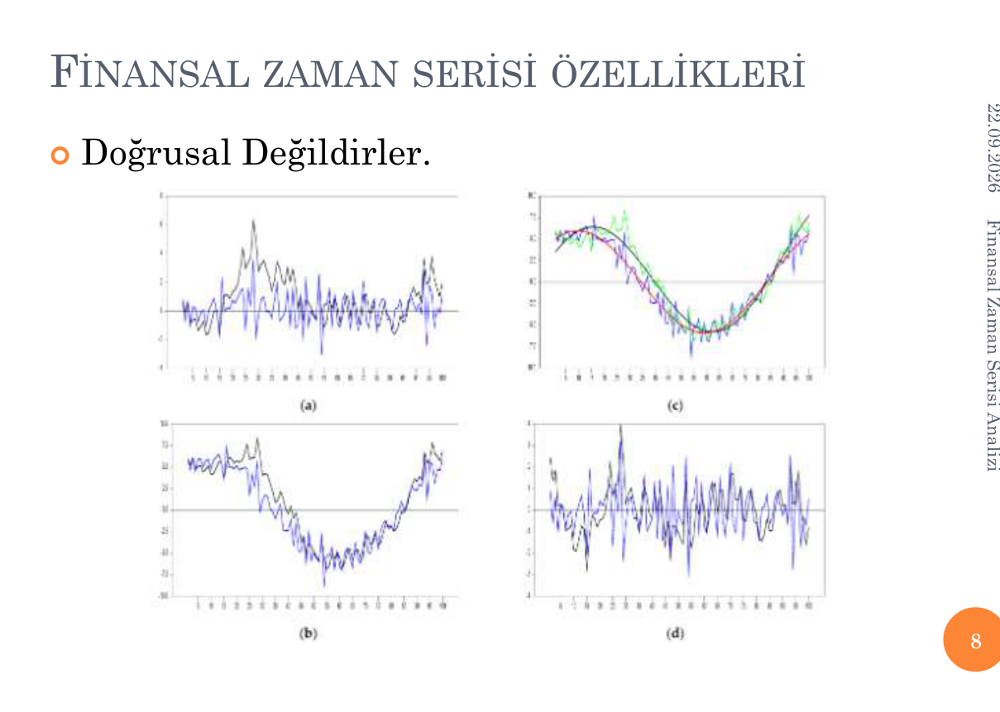
2) Yapısal kırılmalara sahiptirler (Structural Breaks) Ders1 s.9
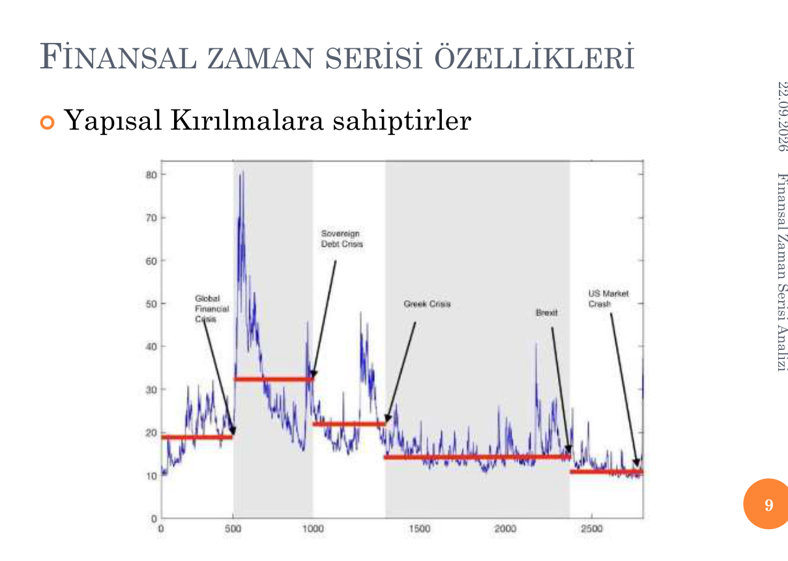
3) Yüksek frekanslıdırlar ve oynaktırlar (High-frequency & Volatile) Ders1 s.10
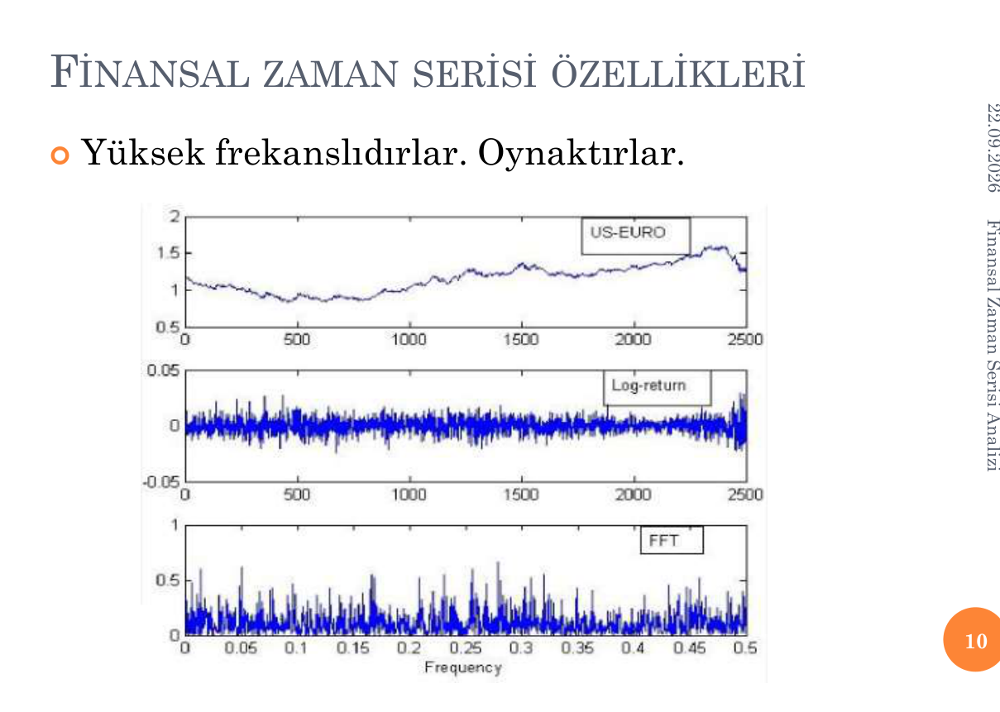
4) Asimetriktirler (Asymmetric / Skewed) Ders1 s.11
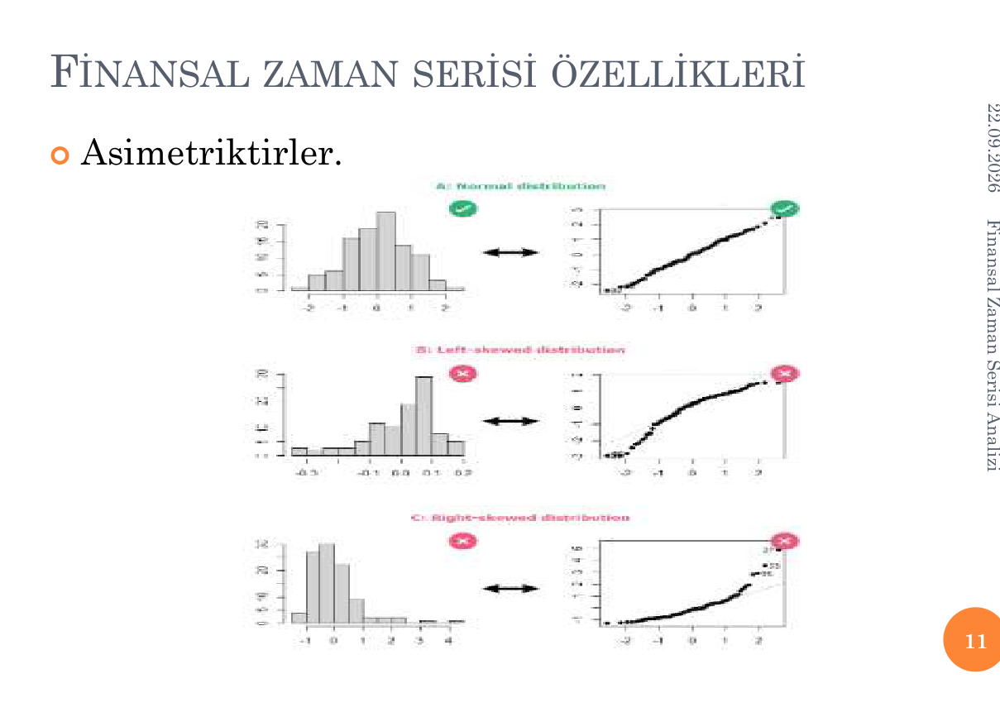
- A (Normal distribution): Çan eğrisi simetriktir; Q-Q plotta tüm noktalar 45°'lik referans doğrusu üzerinde dizilir.
- B (Left-skewed / Sola çarpık): Sol kuyruk uzundur (negatif uç değerler vardır); Q-Q plotta noktalar doğrudan saparak yay çizer.
- C (Right-skewed / Sağa çarpık): Sağ kuyruk uzundur; finansal veriler çoğunlukla B veya C gibi asimetrik (çarpık) yapıdadır, simetrik normal dağılıma uymaz.
Ders 2 · Finansal Piyasa, Veri ve Getiri
1. Finansal piyasa s.2-5
Finansal piyasa, sistemin bir parçası olarak “Para ve Sermaye”nin “Arz ve Talep” edilmesi ile oluşur.
| Para Piyasası | Sermaye Piyasası |
|---|---|
| Fon arz ve talep edenlerin karşılaştığı, araçların vadeleri 12 ayı geçmeyen piyasa. Araçlar: Mevduat, Hazine bonoları, Tahvil, Finansman bonoları, Mevduat sertifikaları, Repo, Banka kabulleri, Banka bonoları, Euro/Dolar, Varlığa dayalı menkul kıymetler. Likiditesi yüksektir; tasarrufların yatırıma dönüşmesinden çok likidite ihtiyacının karşılandığı piyasalardır. Dünyada en etkin ve gelişmiş piyasalar para piyasalarıdır. |
Orta ve uzun vadeli ödünç verilebilir fonların, sermaye piyasası araçlarının alım-satımı suretiyle tasarruf sahiplerinden fon talep edenlere aktarılmasını sağlar. İkiye ayrılır: birincil – ikincil piyasa; ayrıca spot – vadeli piyasa. |
2. Finansal veri ve karakteristik özellikleri (Slayt Grafikleri) s.6-13
Genelde açıklamak istediğimiz finansal değişkenler: varlık fiyatları (hisse senedi, endeks, döviz kuru), varlık getirileri (hisse, endeks getirileri, faiz oranları), oynaklık, işlem hacmi, kurumsal finansman değişkenleri (borç ihracı, riskten korunma araçlarının kullanımı).
Ekonomik veri – finansal veri farkı: Ekonomik veri genellikle düzenli olarak takvim zamanlarında incelenir; finansal veri gerçek zamanlı veya tik-tak şeklinde çok kısa zaman dilimlerinde incelenir. Finansal veri, uygulanacak ekonometrik yaklaşımı şekillendiren 4 temel tanımlayıcı özellik taşır (Slayt 8–13'teki örnek grafikler):
a) Aykırı Gözlem (Outlier) Ders2 s.8
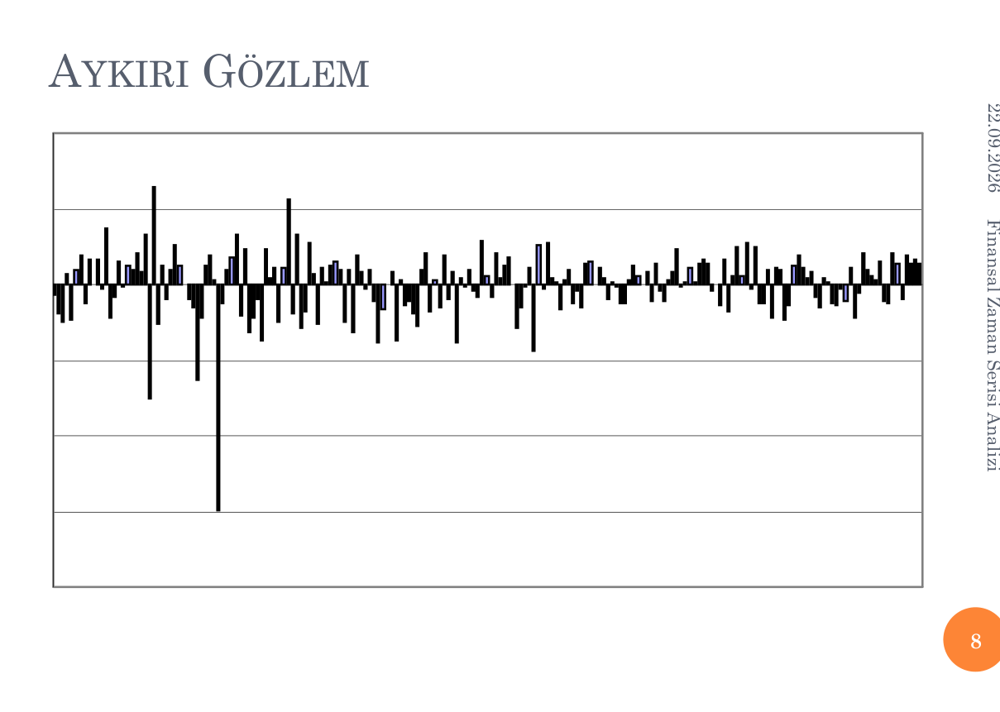
b) Trend ve İki Farklı Trend Davranışı Ders2 s.9-10
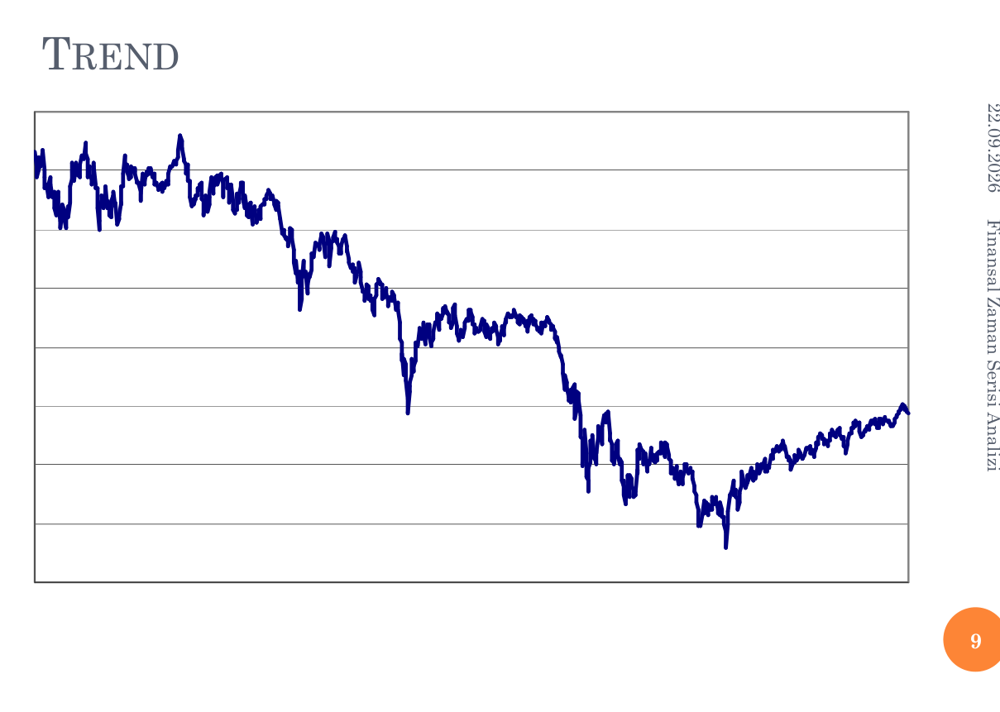
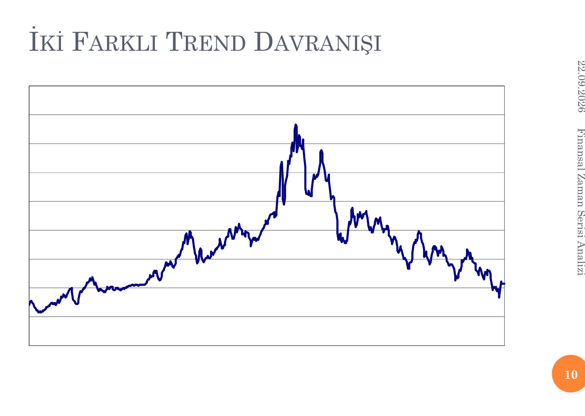
c) Ortalamaya Dönüş (Mean Reversion) ve Çoklu Ortalama Rejimleri Ders2 s.11-12
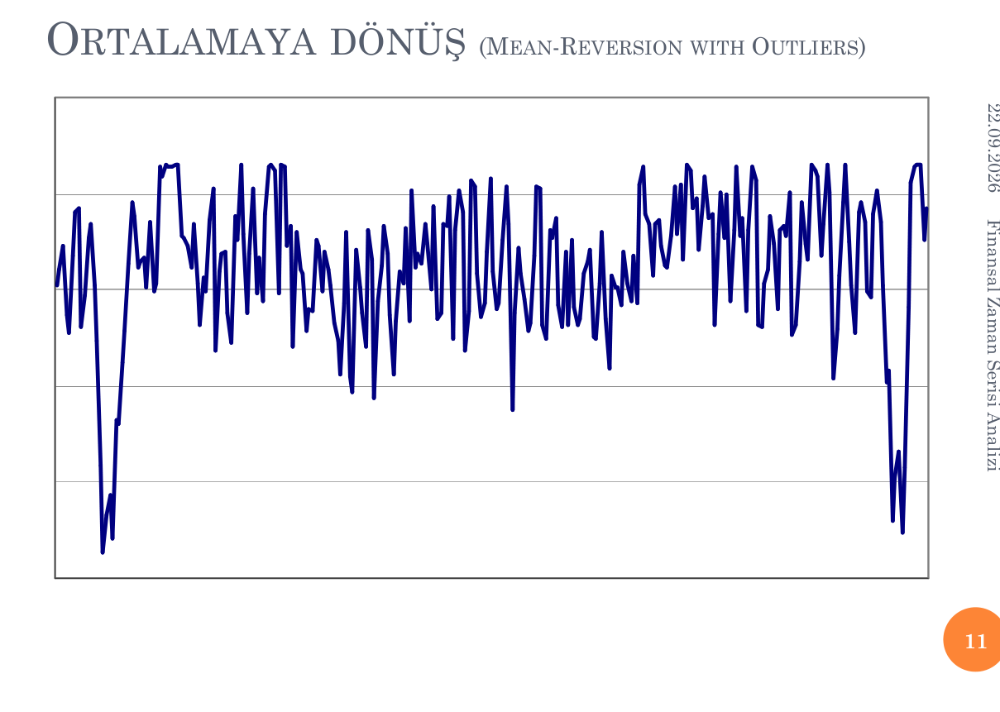
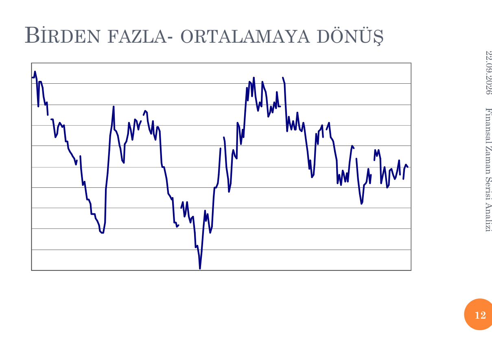
d) Oynaklık Kümelemesi (Volatility Clustering) Ders2 s.13
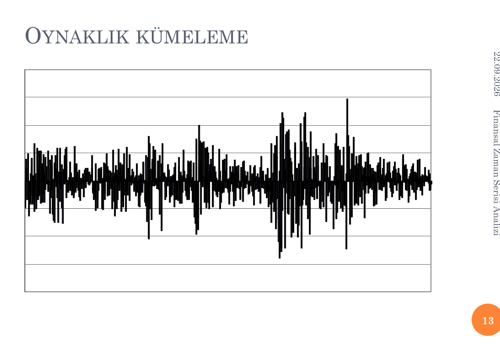
Varlık (asset) türleri s.14: Tahviller, Hisse senetleri, Yatırım fonları, Borsada işlem gören fon ve tahviller (ETF), Türev menkul kıymetler.
3. Neden fiyat yerine GETİRİ? s.15
Campbell, Lo ve MacKinlay (1997)'ye göre iki sebep:
- Ortalama bir yatırımcı için varlığın getirisi, yatırım fırsatlarının tam (complete) ve ölçek-bağımsız (scale-free) özet bilgisini verir.
- Getiri serileri, fiyat serilerine göre daha çekici istatistiksel özellikler içerir.
Getiri aktif karlılık (asset valuation) olarak da adlandırılır.
4. Veri türleri s.16-19
| Tür | Birim (i) | Zaman (t) |
|---|---|---|
| Kesit verisi | Çok firma | Tek zaman anı (ör. 2021) |
| Zaman serisi verisi | Tek firma | Çok zaman anı |
| Panel veri | Çok firma | Çok zaman anı |
Zaman serisi: ardışık zaman dilimlerinde gerçekleşen gözlemler topluluğu; sıralı gözlemler zinciri; eşit zaman aralıklarında sıralı gözlemler zinciridir. Veri eşit aralıklarla (günlük, haftalık, aylık…) toplanmalıdır.
FZSA s.20: Varlıklar üzerindeki GETİRİ'nin zaman içindeki davranışlarının modellenmesi ile ilgilenir. Teori + ampirik uygulama birleşimidir. Belirsizlik altında (belirsizlik/korku/finansal stres indeksi) analiz yapıldığı için istatistiksel teori önemlidir. Ekonomi dinamiklerinden doğrudan/dolaylı etkilendiği için analizi zordur.
5. Basit getiri s.21-25
Varsayım: t−1 anında Pt−1'den alınıp t anında Pt'den satılır; arada nakit akışı (temettü) yoktur. Temettü: şirket hissedarlarına ortaklık payları oranında kâr payı dağıtılmasıdır.
Basit getiri: Yatırımdan elde edilen faiz gelirinin vade sonunda tekrar yatırıma dönüştürülmediği durumdaki getiridir. t−1'den t'ye kadar geçen süreye elde tutma zamanı (holding period) denir; Rt elde tutma zamanının getirisidir (holding period return). Elde tutma zamanı bir saniyeden 50 yıla kadar olabilir.
- Brüt getiri: bugün 1 TL yatırılan kıymetin birikimli değeri olarak yorumlanır.
- Aksi söylenmedikçe “getiri” denince NET getiri anlaşılır.
- Fiyat negatif olamayacağından getirinin alt sınırı vardır (bkz. Tuzaklar #5: Rt ≥ −1).
Net: Rt = 90/85 − 1 = 0.0588 → “Bir aylık yatırım ayda %5.88 getiri sağlamıştır.”
Brüt: 1+Rt = 1.0588 → “t−1'de 1$ yatırıldığında t ayındaki getirisi 1.0588$ olacaktır.”
6. Çoklu dönem (bileşik) getiri s.28-34
İki adet bir dönemlik brüt getirinin geometrik (çarpımsal) toplamıdır. Rt−1 ile Rt küçükse Rt−1Rt ≈ 0 ve 1+Rt(2) ≈ 1 + Rt−1 + Rt.
k-dönemli basit brüt getiri, k adet bir dönemlik brüt getirinin çarpımıdır; buna BİLEŞİK GETİRİ denir.
İki aylık net: Rt(2) = 90/80 − 1 = 0.125 → “Her iki ayda bir %12.5 getiri.”
Aylık: Rt = 90/85 − 1 = 0.0588; Rt−1 = 85/80 − 1 = 0.0625 → “Bir önceki ay %5.88, ondan önceki ay %6.25.”
Brüt: (1.0588)(1.0625) = 1.125 → “2 ay önce 1$ yatıran 2 ay sonra 1.125$'a sahip olur.”
Brüt getirilerin geometrik ortalaması: √1.125 ≈ 1.0607 (ortalama aylık ≈ %6.07).
7. Yıllıklandırılmış getiri & Taylor s.35-36
Getirileri karşılaştırmak için zaman aralığı önemlidir; bilgi yoksa yıllık varsayılabilir. Varlık k yıl elde tutuluyorsa:
= k tane tek dönemlik basit brüt getirinin geometrik ortalaması (−1). 1. dereceden Taylor genişlemesi ile yaklaşık:
Taylor genişlemesinin doğruluğu her uygulama için farklı olabilir.
8. Sürekli bileşik faiz s.37-39
Yıllık faiz %10, depozito 1$: yılda 1 ödeme → 1.1$; 6 ayda bir (m=2) → 1·(1+0.1/2)2 = 1.1025$; genel: 1·(1+0.1/m)m.
| Tür | Ödeme sayısı | Dönem faizi | Net değer |
|---|---|---|---|
| Yıllık | 1 | 0.1 | 1.10000 |
| 6 aylık | 2 | 0.05 | 1.10250 |
| Çeyreklik | 4 | 0.025 | 1.10381 |
| Aylık | 12 | 0.0083 | 1.10471 |
| Haftalık | 52 | 0.1/52 | 1.10506 |
| Günlük | 365 | 0.1/365 | 1.10516 |
| Sürekli | ∞ | 1.10517 |
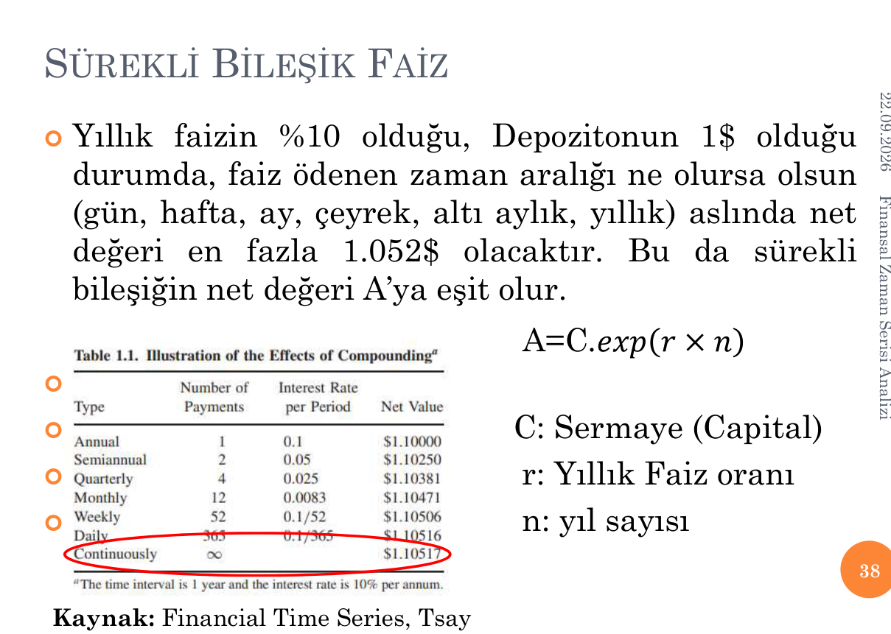
1 × e0.1 = 1.10517$ değerine yakınsar. (Slayt metnindeki 1.052$ yazım hatasıdır, tablodaki 1.10517$ doğrudur.)
9. Sürekli bileşik (log) getiri s.40
Basit brüt getirinin doğal logaritması = sürekli bileşik getiri = log getiri.
Çok dönemli log getiri, bir dönemlik log getirilerin toplamıdır. Log getirinin istatistiksel özellikleri daha uysaldır (tractable).
10. Portföy, temettü, aşırı getiri, arbitraj s.41-44
Portföy: Varlıkların aynı/farklı özellikte birden fazla kıymete yatırılması sonucu oluşan toplam değer. N varlıklı portföyün basit net getirisi, varlıkların basit net getirilerinin ağırlıklı ortalamasıdır (ağırlık = varlığın portföydeki yüzdesi):
Temettü ödeniyorsa:
Aşırı getiri: varlığın getirisi ile bir referans varlığın (genellikle risksiz, ör. hazine bonosu) getirisi arasındaki fark.
Finans literatüründe aşırı getiri; net ilk yatırımı olmayan referans varlığın kısa, net ilk yatırımı olan varlığın uzun pozisyonda olduğu portföyün arbitraj ödemesi olarak düşünülebilir.
Arbitraj: Risksiz kâr etmek için farklı piyasalardaki dengesizlikten faydalanma. Bir piyasadan düşük fiyata alınan ürün başka piyasada eş zamanlı yüksek fiyata satılır. Piyasa dengesini bozan arbitraj işlemi, işleyen piyasalarda yapılmaz.
11. Özet s.45-46
3 aylık log getiriler %4.46, %−7.34, %10.77 → çeyreklik log getiri = 4.46 − 7.34 + 10.77 = %7.89 (log getiriler toplanır).
Ders 3 · Temel Veri Analizi ve Getiri Dağılımları
1. Veri tabanı incelenirken sorulacaklar s.2
Trend mi? Ortalamaya dönüş mü? Oynaklık kümelemesi mi? Aykırı gözlem var mı? Dönüm noktaları var mı? Rejim değişiklikleri (yapısal kırılmalar) var mı?
2. Özet istatistikler (x1,…,xT) s.3-5
Gözlem sayısı, kayıp gözlem, ortalama, ortanca, mod, varyans, standart sapma, min/maks, çarpıklık, basıklık.
3. Değişkenler arası ilişki s.6
İşlem hacmi, oynaklığa pozitif yönlü ve kuvvetli olarak bağımlıdır. İlişki incelemek için: çapraz çizim (cross-plot), çoklu zaman serisi grafiği, korelasyon (kovaryans).
4. Temel veri manipülasyonları s.7
Doğal logaritma almak (ln) · Getiri hesaplamak · Mevsimsel uyarlama · Ortalamadan farkını almak (de-meaning) · Trend bileşeninden arındırmak (de-trending) · Gecikme (lagging) veya ileri zaman (leading).
5. Dönem içi / dönem dışı kestirim / öngörü s.8-10
| Dönem | Yt | Kestirim adı |
|---|---|---|
| 2010, 2011 | (veri yok, geçmiş) | Dönem Öncesi Kestirim (DÖK) |
| 2012–2016 | 58845 … 73257 (modelin kurulduğu veri) | Dönem İçi Kestirim (DİK) |
| 2017, 2018 | 74248, 78070 (var ama modele katılmayan) | Dönem Dışı Kestirim (DDK) |
| 2019, 2020 | (veri yok, gelecek) | Öngörü |
R'de: ornek1<-ts(c(58845,59675,63215,69402,73257),start=2012), plot.ts(ornek1). Örnek-2: 1999:I–2001:II çeyreklik veri.
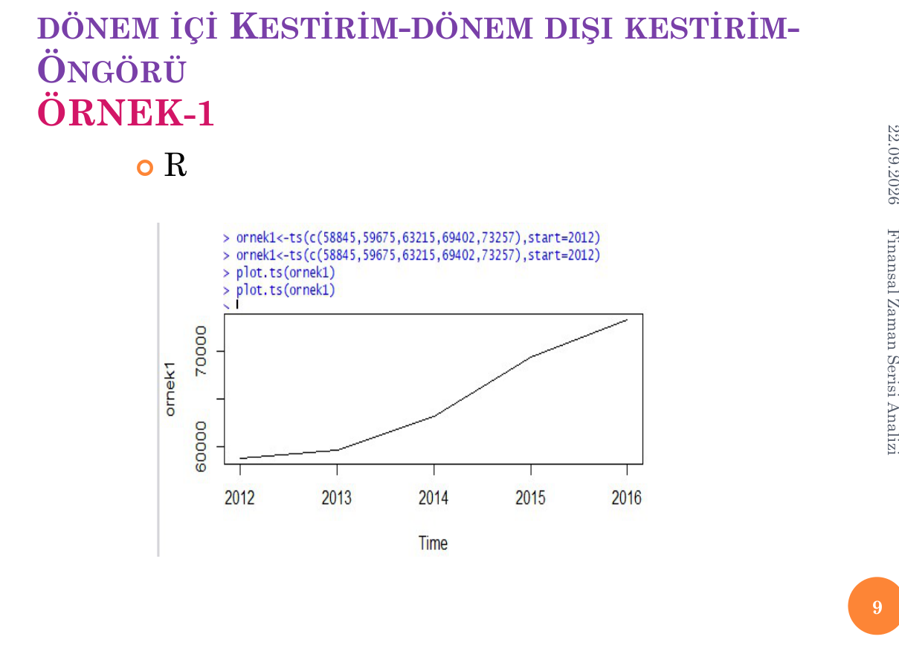
ts(..., start=2012) komutuyla yıllık zaman serisi nesnesi oluşturulmuş ve plot.ts(ornek1) ile çizdirilmiştir. Modelin kurulduğu 2012–2016 aralığı Dönem İçi Kestirim (DİK) dönemidir; grafikte bu dönemde belirgin bir artış eğilimi (trend) görülmektedir.
6. Getirilerin dağılımı ve slayt grafikleri s.11-18
a) Normal dağılım varsayımı: Rit ~ i.i.d. N(μ, σ²)
İstatistiksel özellikleri kolay takip edilir; fakat sorunları:
- Normal dağılımın alt-üst sınırları sonsuz; getirinin alt değeri ise −1.
- Rit normal dağılsa bile çok periyotlu Rit[k] normal dağılmaz, çünkü çarpımlardan oluşur.
- Normalin simetriklik varsayımı, ampirik getirilerin sağa çarpık olmasıyla çakışır.
b) Lognormal dağılım: Rt ~ i.i.d. LogNormal(μ, σ²)
Normal yerine lognormal varsayımı daha gerçekçi ve kullanışlıdır. Rt'nin ortalaması m1, varyansı m2 ise:
- iid normal değişkenlerin sonlu toplamı normal olduğundan {rt} normalse rt[k] de normaldir.
- rt'nin alt sınır problemi yoktur; Rt'nin alt sınırı da 1+Rt = exp(rt) ile sağlanır.
- Birçok borsa verisi sağa çarpık olsa da tüm borsa verileri lognormale her zaman uymaz.
c) Kararlı (stable) dağılım
İki bağımsız rastgele değişkenin doğrusal birleşimi, konum ve ölçek parametrelerine kadar aynı dağılıma sahipse dağılım kararlıdır. Normal dağılımın genelleştirilmesidir; sağa çarpıklığı yansıtabilir. Ancak normal-olmayan kararlı dağılımlarda sonlu varyans YOKTUR. Örnek: Cauchy – medyan etrafında simetrik ama sonsuz varyanslı.
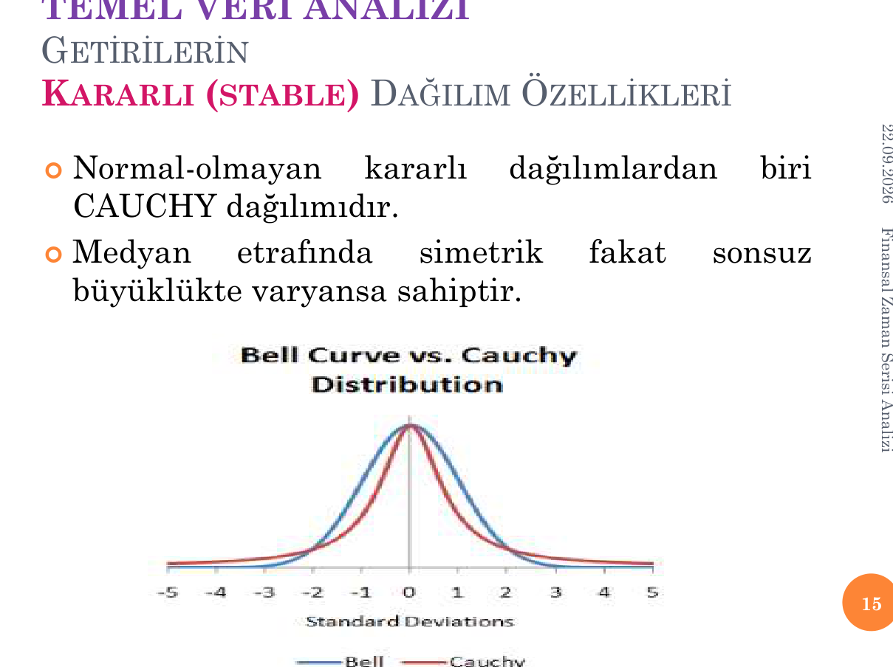
d) Normal dağılımın ölçek karışımı / sonlu karışımı
Son çalışmalar borsa getirilerinin bu dağılıma yakın olduğunu göstermektedir.
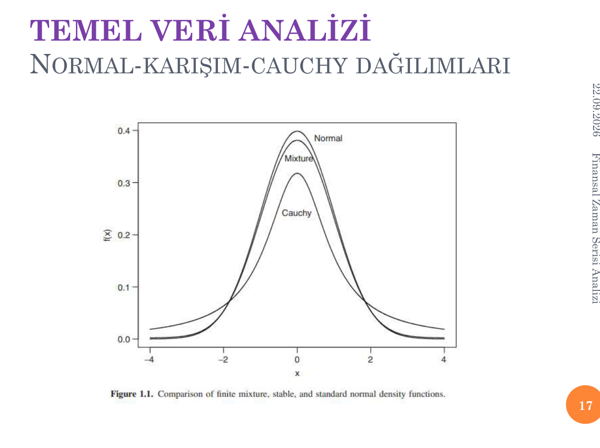
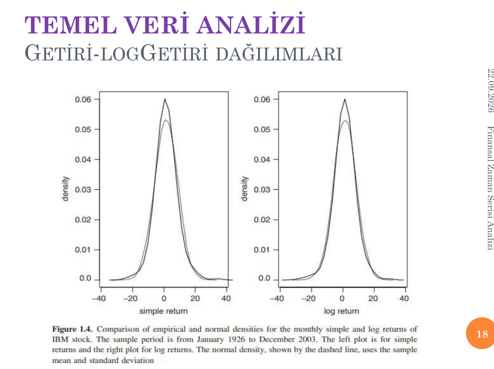
7. Varsayım kontrolleri ve R uygulama görselleri s.19-31
Normallik varsayımı · Değişen varyanslılık varsayımı · Otokorelasyon testi (Durbin-Watson).
Normallik altında Ŝ(x) ve K̂(x)−3, asimptotik olarak varyansı sırasıyla 6/T ve 24/T olan normal dağılıma sahiptir.
H0: S(r)=0 (simetrik) — Ha: S(r)≠0
H0: K(r)−3=0 (normal kuyruklu) — Ha: K(r)−3≠0
Jarque–Bera testi ve Q-Q Plot
Jarque ve Bera (1987) iki testi birleştirir:
H0: Veriler normal kitleden gelmektedir. JB > χ²2(α) veya p < α ⇒ H0 reddet. Diğer normallik testleri: Kolmogorov-Smirnov, Shapiro-Wilk.
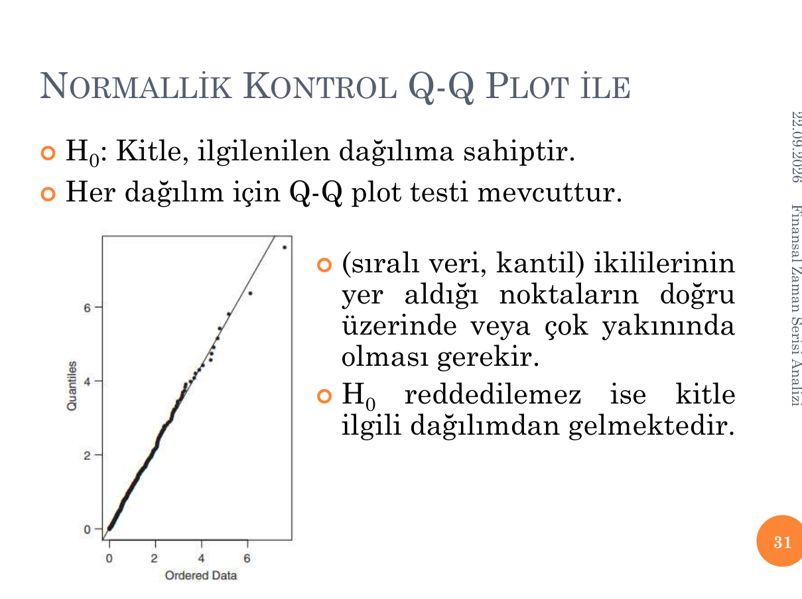
Slayttaki R Çıktı Görselleri (Örnek 3, 4, 5, 6) Ders3 s.22-30
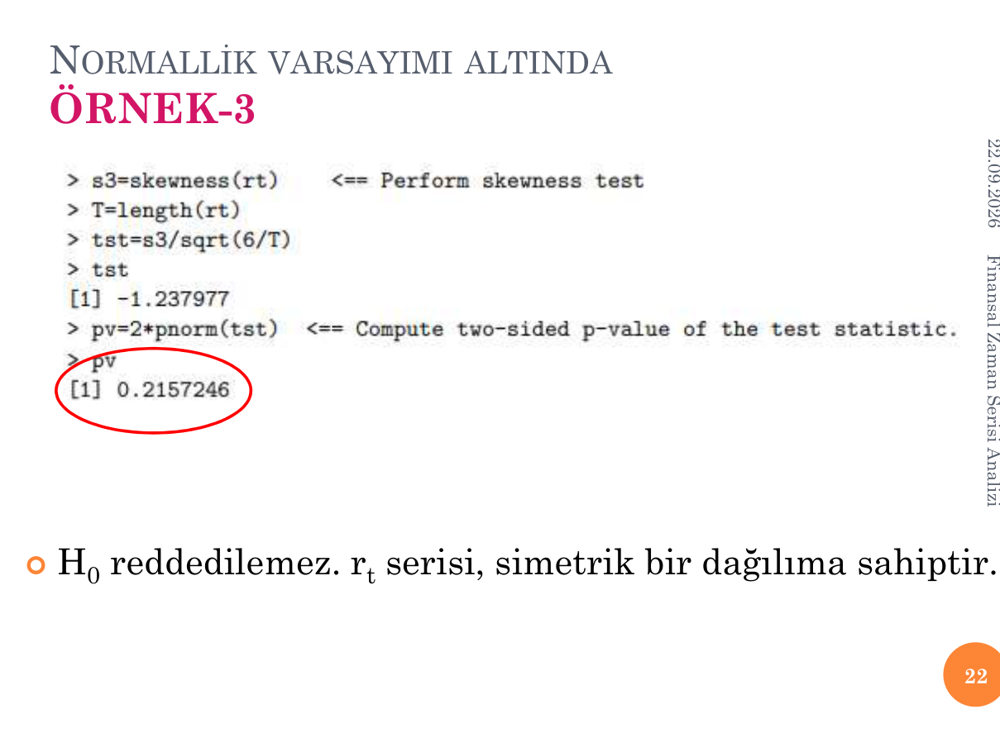
tst = s3/sqrt(6/T) = -1.238 ve çift yönlü p-değeri 0.2157 > 0.05 olduğu için H0 reddedilemez; rt serisi simetrik bir dağılıma sahiptir.
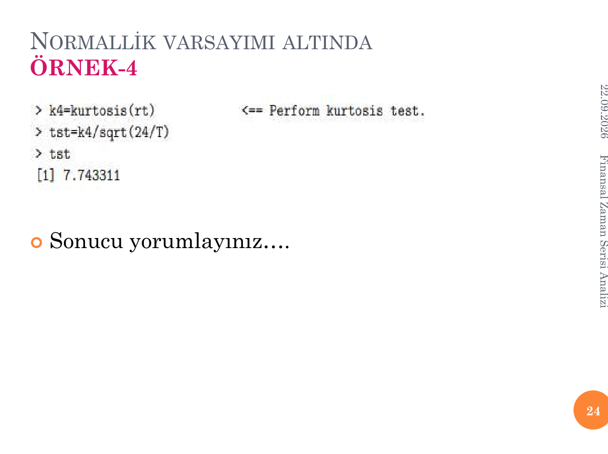
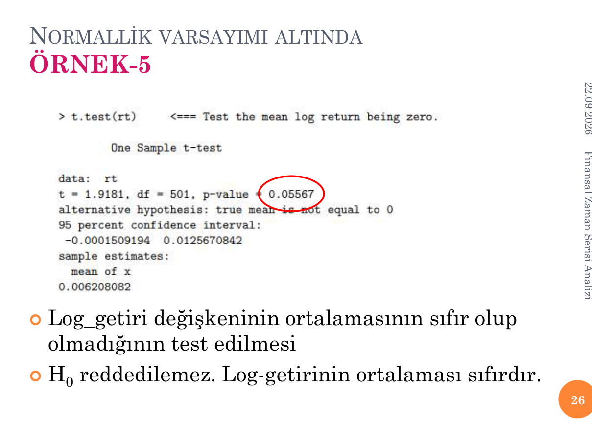
t.test(rt) sonucunda p-değeri 0.05567 > 0.05 olduğundan H0 reddedilemez. Log-getirinin ortalaması istatistiksel olarak sıfırdır (%95 güven aralığı −0.00015 ile +0.01257 olup 0'ı içerir).
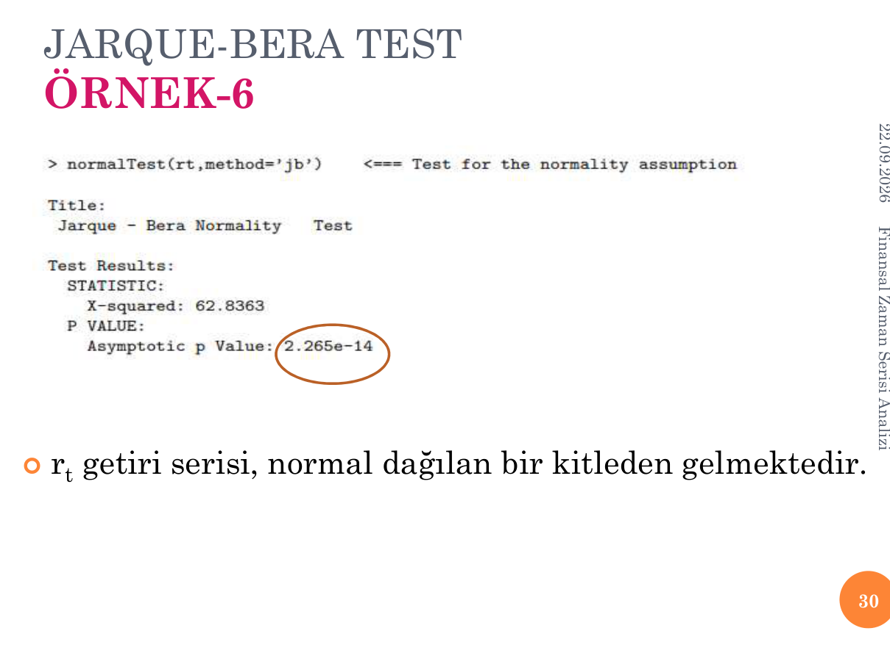
JB = (−1.238)² + (7.743)² ≈ 62.84, p = 2.265e-14 < 0.05. Ders 3 s.29 kuralına göre p < α olduğunda H0 reddedilir (seri normal değildir; kalın kuyruk nedeniyle normallik bozulmuştur). Slayt altındaki cümlede sehven “normal dağılan kitleden gelmektedir” yazılmıştır (bkz. Tuzaklar #2).
Ders 4 · Temel Zaman Serisi Kavramları ve Bileşenler
1. Zaman serisi nedir? s.2-3
Stokastik bir süreç olan zaman serisi, iç bağımlılığı olan rastgele değişkenin zaman aralıklarıyla aldığı değerlerin ardı ardına sıralanmasıyla meydana gelen seridir: {Yt, t ∈ T} — Yt: rastgele değişken, T: sürecin belirlendiği zaman noktaları kümesi, t: her bir zaman noktası.
Stokastik süreç olarak zaman serisi rastgele değişkenler topluluğundan oluşur: {…, Y−1, Y0, Y1, …, YT, …} = {Yt}−∞∞. {y1, y2, …, yT} ise gözlenen zaman serisi değerleridir (realization of time series). Her zaman noktasındaki değer bir rassal değişkendir.
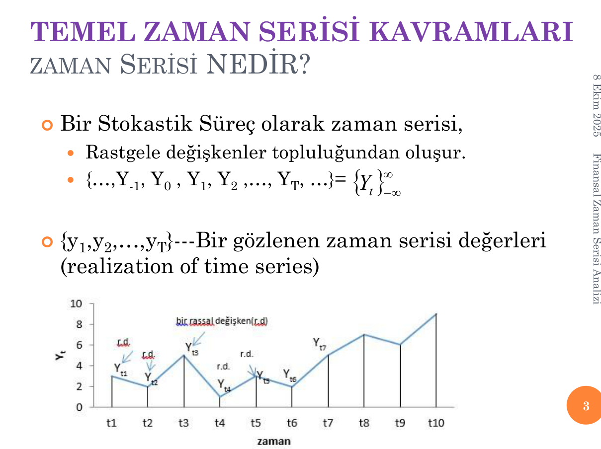
t = 1, 2, 3, ..., T zaman noktasından yukarı çıkan dikey kesikli çizginin ucundaki nokta bir rastgele değişkendir (r.d.). Bu noktaların zaman sırasıyla birleştirilmesiyle elde edilen {y1, y2, ..., yT} yörüngesi, stokastik sürecin gözlenen tek bir gerçekleşmesidir (realization of time series).
2. Gecikme (lag) s.4-6
Zaman serisi değişkeninin zaman orijininin k adım geriye veya ileriye kaydırılmasıyla elde edilir. t anındaki değerin k adım sonrası t+k, k adım öncesi t−k. Zaman ekseni k eşit aralığa bölünür; böylece k zaman birimi ile ayrılan değişkenler arasındaki ilişkinin yönü ve gücü incelenir.
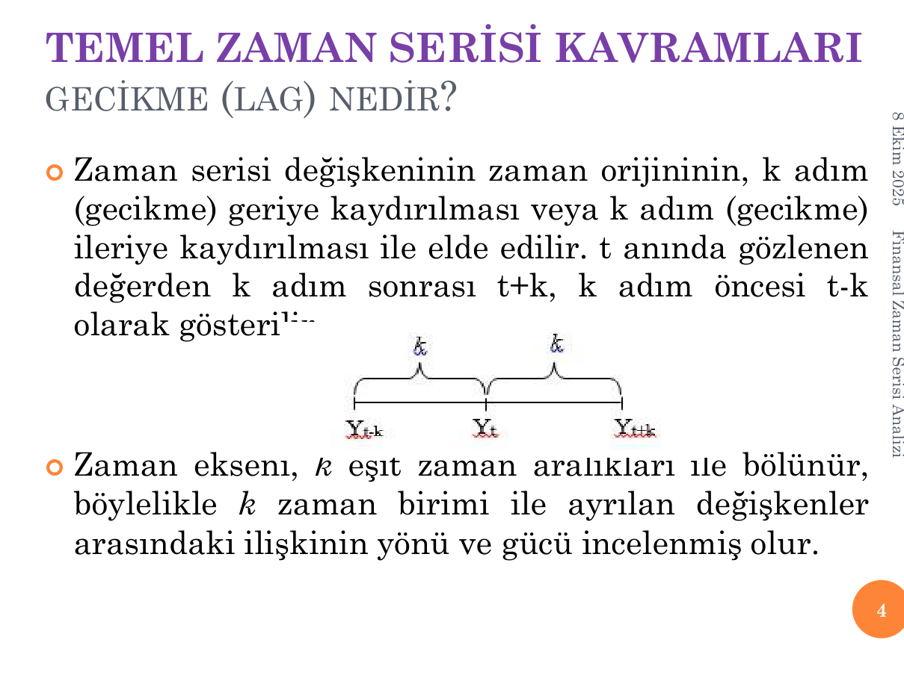
t merkez alındığında, sola doğru t−1, t−2, ..., t−k geçmiş dönem gecikmelerini (lag); sağa doğru t+1, t+2, ..., t+k ise ileri dönem (lead) zaman noktalarını gösterir.
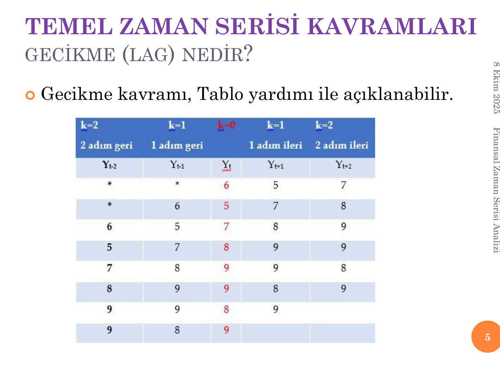
k=1 adım geciktirildiğinde (Yt−1) ilk satır * olur (1 gözlem kaybolur); k=2 adımda (Yt−2) ilk iki satır * olur. Gecikme sayısı arttıkça serbestlik derecesi azalır; bu yüzden k en fazla T−2 değerini alabilir.
| Yt−2 | Yt−1 | Yt (k=0) | Yt+1 | Yt+2 |
|---|---|---|---|---|
| * | * | 6 | 5 | 7 |
| * | 6 | 5 | 7 | 8 |
| 6 | 5 | 7 | 8 | 9 |
| 5 | 7 | 8 | 9 | 9 |
k çok büyük seçilmedikçe gecikmeli seriler (k=1,2,…) orijinal seriyle (k=0) aynı sistematik yapıdadır; Yt'de mevsimsellik varsa gecikmelilerde de olur. k, gözlem sayısına bağlıdır; en fazla T−2 değerini alabilir.
3. Zaman serisi dönemleri s.7-8
- Bugünkü dönem: En son gözlemin ait olduğu zaman noktası t; Yt.
- Geçmiş dönem: Olayın t'ye kadarki tarihsel gelişimi; Yt−1, Yt−2,… (Yt Çarşamba ise Yt−1 Salı, Yt−2 Pazartesi).
- Gelecek dönem – Öngörü: Geleceğe ait öngörülerin yapıldığı dönem; Yt+1, Yt+2,… (Yt Haziran ise Yt+1 Temmuz, Yt+2 Ağustos).
4. Çözümlemenin amacı s.9
- Ardışık gözlemlerden oluşan olayların doğasını tanımak: rastgele değişmelerin yanında hangi bileşenlerin etkili olduğunu belirlemek; serinin özelliklerini açıklamak.
- Gelecek değerleri öngörmek: gözlemler arasında iç bağımlılık (otokorelasyon) olması ve değişmelere neden olan etkilerin gelecekte de aynı şekilde devam edeceği varsayımıyla öngörü elde etmek.
5. Araştırmacının kararları s.10
- En uygun öngörü periyodu / zaman dilimi (saniye, gün, hafta, ay, çeyrek, yıl)
- Toplanacak toplam veri sayısı – ideal zaman aralığı
- Öngörü dönemi (forecasting horizon, forecast lead time) araştırmanın başında belirlenmeli.
6. Öngörü horizonu (Forecasting Horizon) s.11
| Yakın dönem | Kısa dönem | Orta dönem | Uzun dönem |
|---|---|---|---|
| t < 10 zd | 10 < t < 30 zd | 30 < t < 90 zd | t > 90 zd (slaytta “<” yazılmış) |
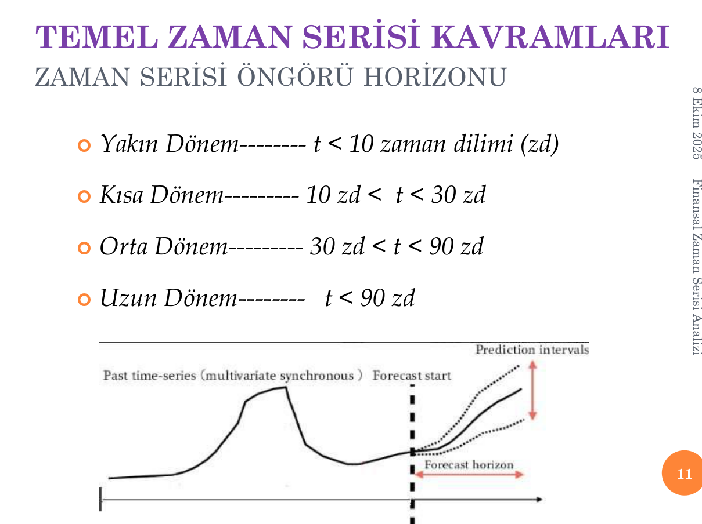
7. Sistematik yapı + rassal gürültü s.12
Sistematik yapı: genellikle tanımlanabilen bileşenlerden oluşan yapı. Rassal gürültü: sistemin yapısının belirlenmesini zorlaştıran yapı (hata). Çoğu teknikte sistematik yapıyı iyi tanımlamak için sistem gürültüden arındırılmaya çalışılır.
8. Zaman serisi bileşenleri ve slayt grafikleri s.13-26
Dört bileşen: Trend · Mevsimsellik · Döngüsellik · Düzensiz hareketler.
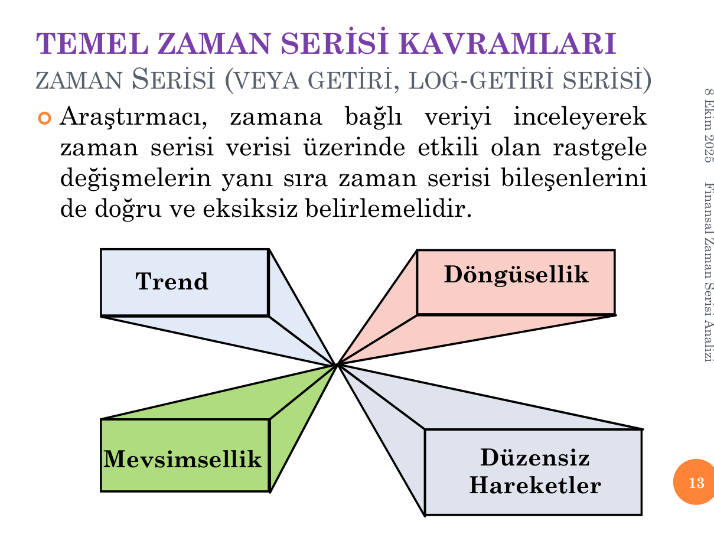
a) Trend Bileşeni ve 6 Trend Modeli Grafiği Ders4 s.14-15
Değişkenin uzun dönemde artış veya azalış eğilimi. Uzun dönem genellikle 7 yıl veya daha fazla.
- Doğrusal trend: uzun dönemde sabit değişim oranı ile artma/azalma.
- Doğrusal olmayan trend: değişim miktarının zamanla arttığı/azaldığı; değişim oranının sabit olmadığı trend.
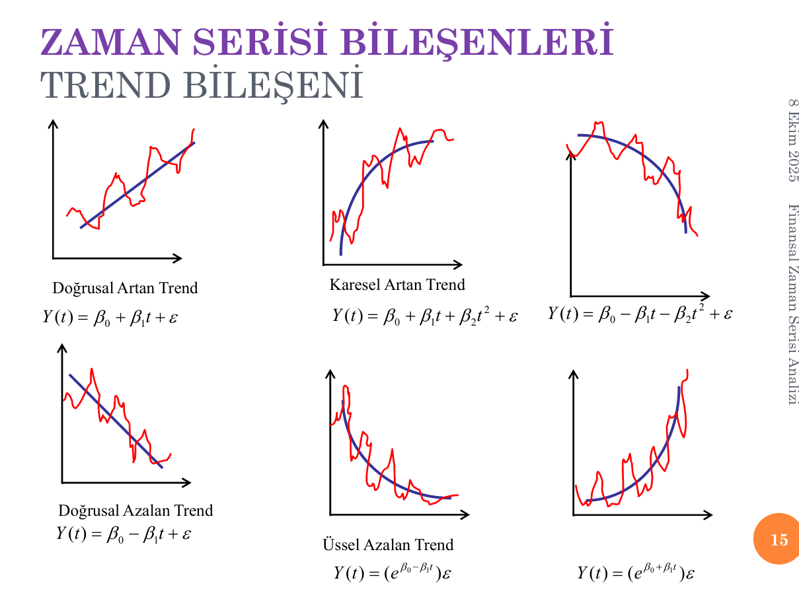
- Sol Sütun (Doğrusal Trendler): Sabit eğimle yükselen
Y(t) = β0 + β1t + ε(Doğrusal Artan) ve sabit eğimle düşenY(t) = β0 − β1t + ε(Doğrusal Azalan). - Orta-Üst ve Sağ-Üst (Karesel Trendler): Parabolik (eğrisel) artan
Y(t) = β0 + β1t + β2t² + εve parabolik azalanY(t) = β0 − β1t − β2t² + ε. - Orta-Alt ve Sağ-Alt (Üssel Trendler): Hızla azalan
Y(t) = (eβ0−β1t)ε(Üssel Azalan) ve ivmelenerek artanY(t) = (eβ0+β1t)ε(Üssel Artan).
b) Mevsimsel Bileşen ve Dalga Analizi Grafiği Ders4 s.16-17
- Değerler belirli periyotlarda tekrarlanıyorsa seri mevsimsel etki altındadır; tekrarlı, periyodik yapı içerir.
- Tekrarlı yapı: eşit aralıklarda ve aynı zaman dilimlerinde benzer davranış gösteren sabit salınımlar.
- Genellikle hava şartları veya müşteri tercihleri gibi etkenlerden doğar.
- En kısa tekrarlanan periyottur; bir mevsimsel dalga en fazla bir yıl içinde tamamlanır.
- Aylık veya çeyreklik dilimlerde incelenir. Yıllık veri mevsimselliği göstermez.
- Serinin durağanlığını bozar.
- Dalga analizi: dalga uzunluğu (L) ve dalga şiddeti.
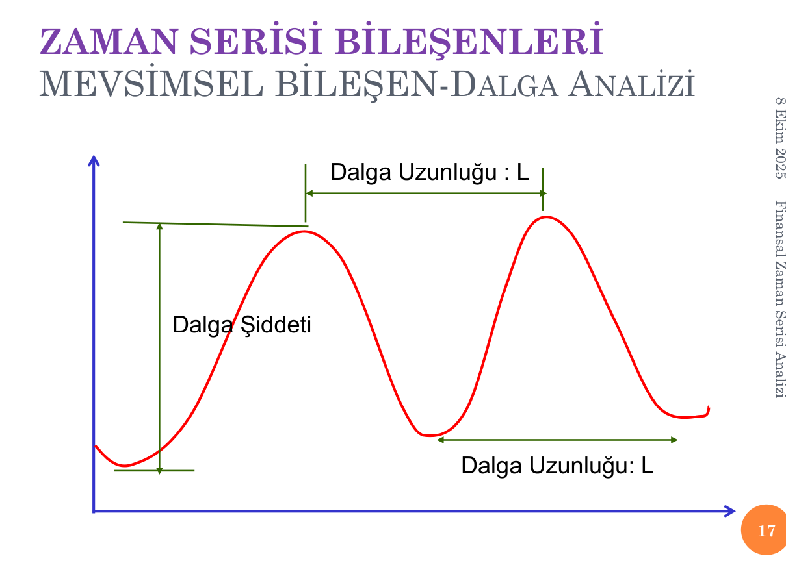
c) Döngüsel (Konjonktürel) Bileşen Grafiği Ders4 s.18-19
- Bir yıldan daha uzun dönemi kapsayan büyük salınımlar; iki yıl–on yıl ve daha uzun dönemde artış/azalış eğilimi.
- Mevsimselden farkı: mevsimsel dalga en fazla bir yılda, döngüsel dalga çok uzun sürede (20-30 yıl gibi) tamamlanır.
- Zaman dilimi yıl olmak zorunda değil; büyük dalganın uzun dönemde gerçekleşmesi yeterli.
- Serinin durağanlığını bozar, seriden arındırılmalıdır.
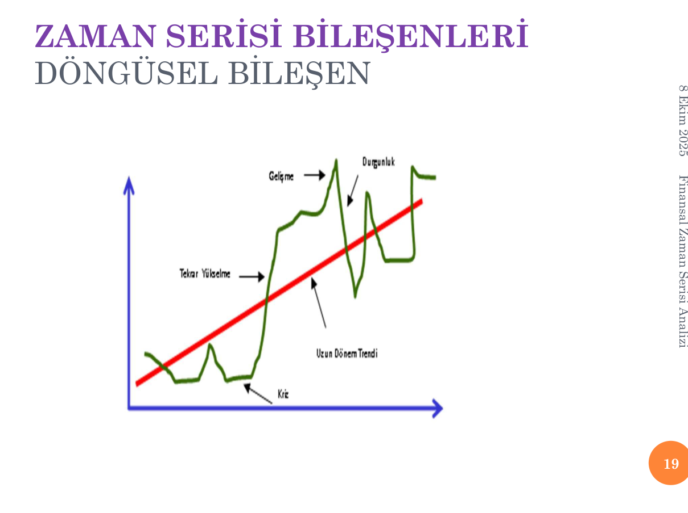
d) Düzensiz Hareketler (Irregular Movements) Grafiği Ders4 s.20-21
- Birdenbire, nedeni belli olmayan düzensiz sıçramalar veya çöküşler; dış kaynaklı bozukluklar (disturbance).
- Depremler, nadir kazalar, kasırga vb. doğal afetler, savaşlar, ekonomik krizler.
- Seriden arındırılmalıdır; genellikle gürültü olarak adlandırılır; durağan olmayan süreçlerdir.
- Standart dönüşümlerle tamamen yok etmek pek mümkün değildir.
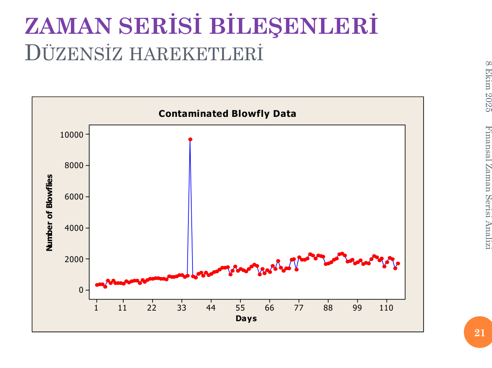
e) “Hangi Bileşen / Bileşenler?” Slayt Uygulama Grafikleri Ders4 s.22-26
Hocanın derste “Hangi Bileşen/Bileşenler?” başlığıyla sorduğu 5 slaytın tamamı ve her grafikteki bileşenlerin açıklaması:
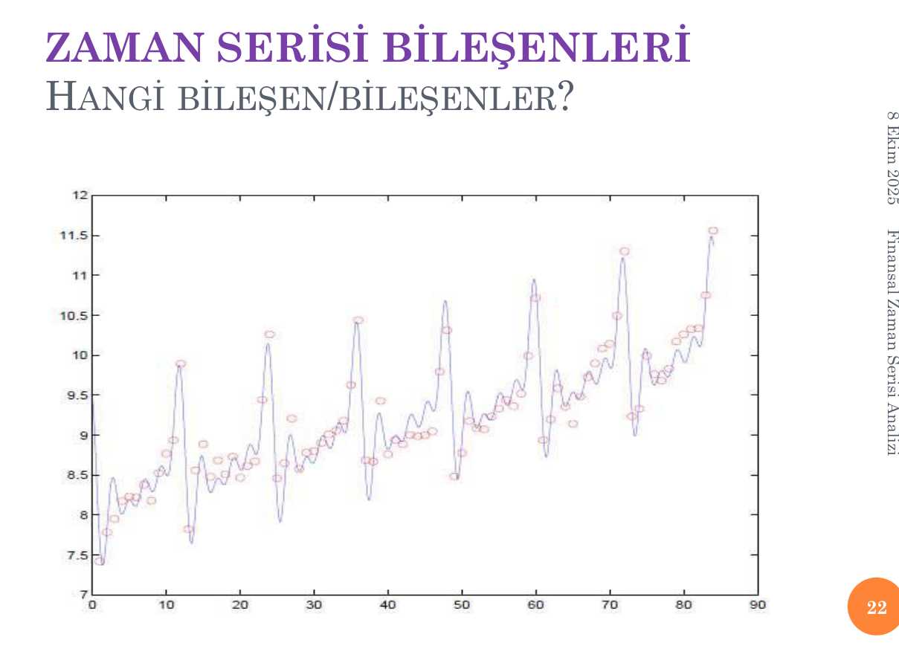
- Sol grafik: 1948'den 1960'a kadar sürekli yukarı giden bir Artan Trend ve her yıl aynı şekilde tekrarlanan Mevsimsel bileşen (çarpımsal/genliği artan mevsimsellik) birlikte bulunmaktadır.
- Sağ grafik: Her yıl içindeki sık zikzaklar Mevsimsel bileşeni, 1975–2000 boyunca büyük çanak/tepe yapan genel dalga ise Döngüsel bileşeni (ve hafif azalan eğilimi) gösterir.
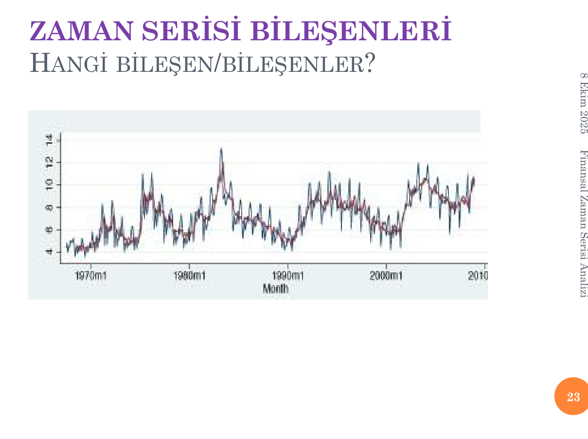
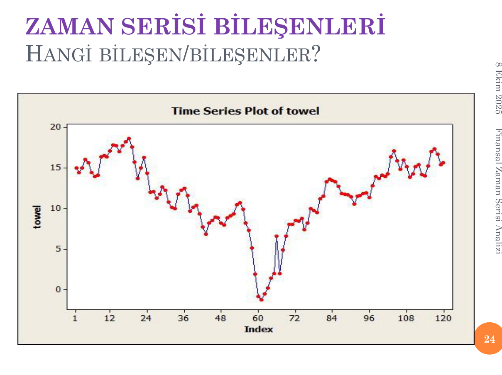
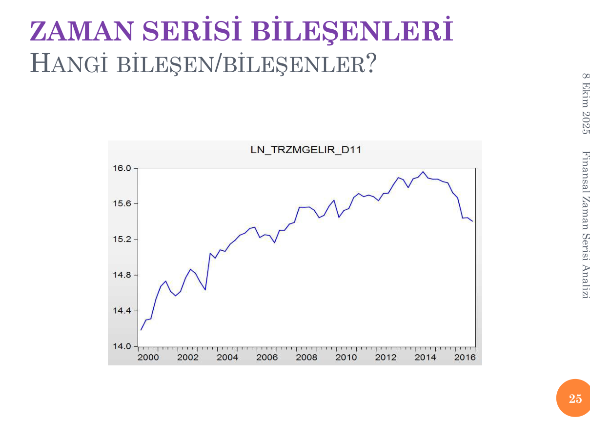
LN_GSMH) grafiğinde sol alttan sağ üste doğru kararlı bir Artan Trend ve her yılın çeyreklerinde düzenli tekrarlanan Mevsimsel Bileşen birlikte yer almaktadır.
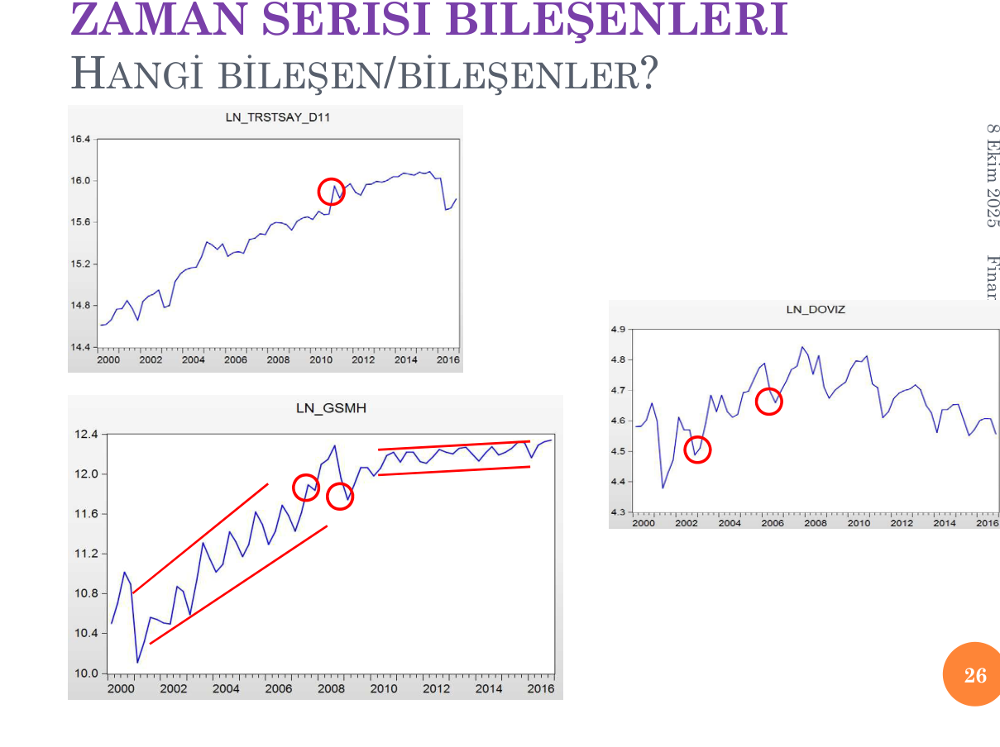
LN_DOVIZ serisinde uzun dönemli Artan Trend bileşeninin yanı sıra, kırmızı dairelerle işaretlenen ekonomik kriz anlarında (1994 ve 2001) meydana gelen ani sıçramalar yani Düzensiz Hareketler (ve yapısal kırılmalar) bulunmaktadır.
Ders 5 · Temel Zaman Serisi Kontrolleri: Normallik ve Durağanlık
1. Normallik kontrolü ve akış şeması s.2-5
Histogramın (olasılık yoğunluk fonksiyonunun) normal dağılımdan gelmesi, öngörünün gerçekleşecek değere en yakın olmasını sağlar.
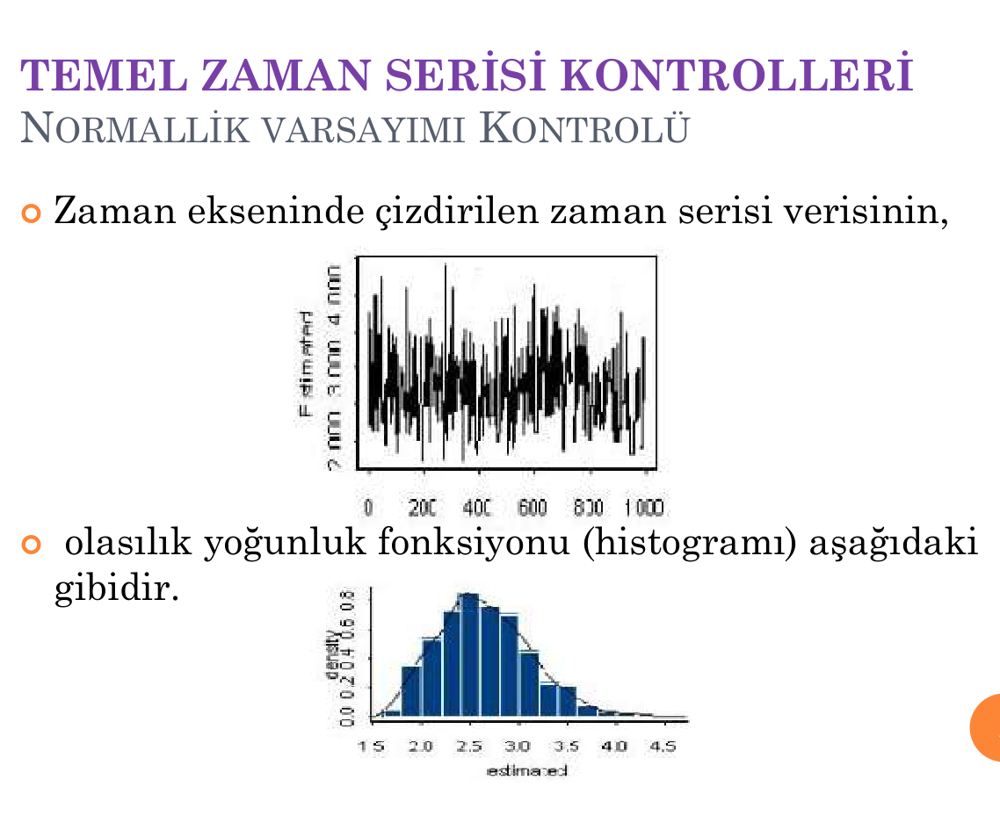
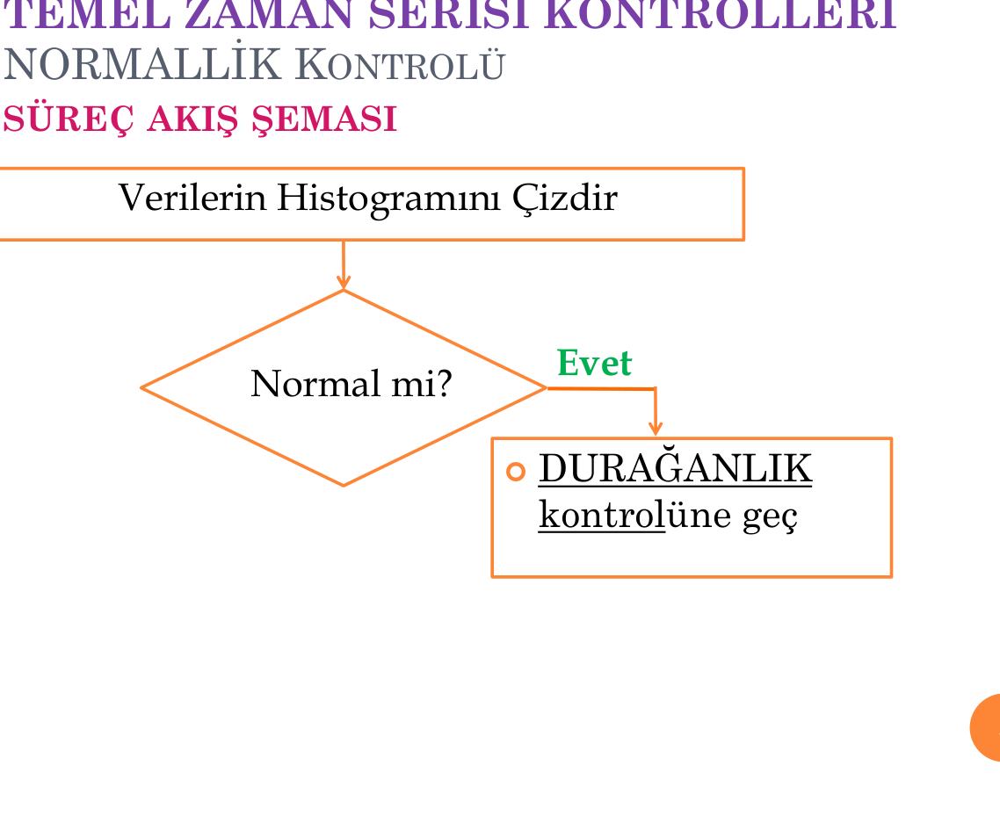
2. Durağanlık ve Örnek Grafikler (Kamyon & ABD Tütün Üretimi) s.6-20
Neden önemli? Seri durağan değilse farklı veri setlerinde farklı görüntüler sergiler; davranışı gelecek dönemlere genellenemez ve tahmin için yararlı olmaz.
Durağan seri: Stokastik süreç olarak tüm özellikleri (ortalama, varyans, kovaryans ve daha yüksek momentler) zamana göre değişmiyorsa ve seri periyodik dalgalanma içermiyorsa.
Durağan olmayan seri: Değişen bir ortalama ve değişen ortalama etrafında değişen varyansa sahip seri.
Farklı dönemler için tanımlayıcı istatistiklerin sabit kalması varsayımı, zaman serisi çözümlemesinin en önemli varsayımlarındandır.
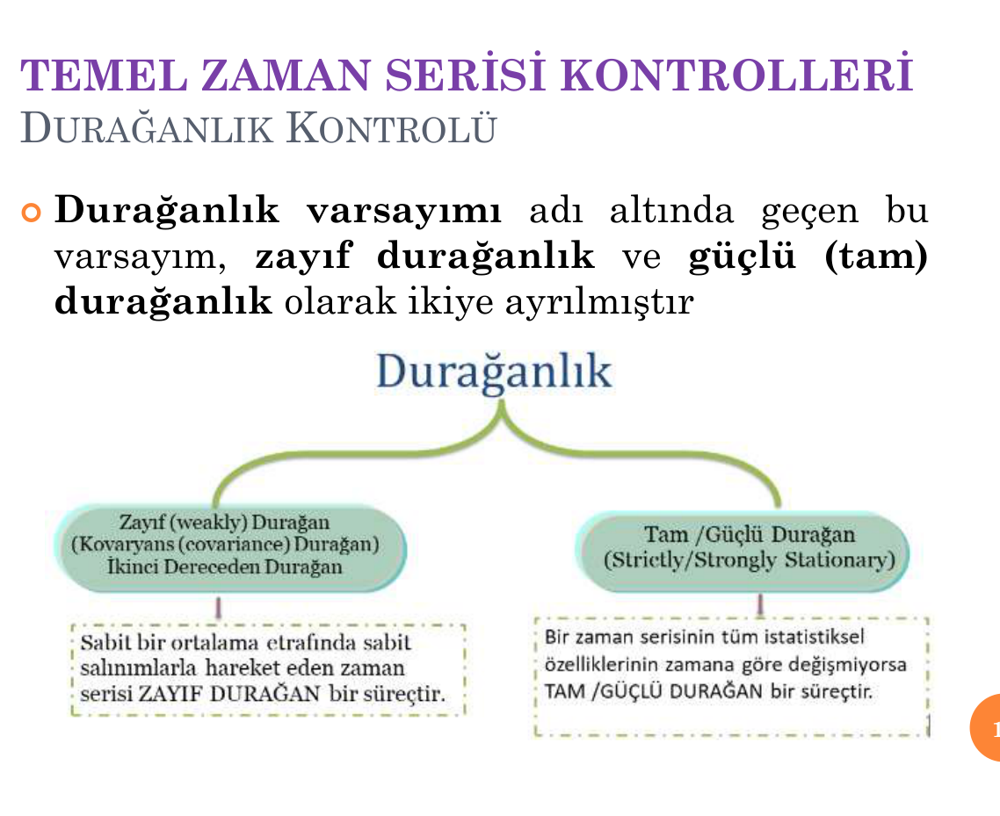
| Tür | Tanım |
|---|---|
| Tam (güçlü / strictly) durağanlık | Tüm istatistiksel özelliklerin zamana göre değişmezliği. Gözlem kümesinin bileşik olasılık dağılımı, zaman noktaları orijine göre ileri/geri kaydırıldığında değişmiyorsa. Sadece zaman noktaları arasındaki uzaklığa bağlıdır; istatistiksel olarak DENGEde olan seridir. |
| Birinci dereceden durağanlık | Sadece sıfır orijinine göre birinci momenti, yani ortalaması zamana göre değişmiyor. |
| Zayıf / ikinci dereceden / kovaryans durağanlık | Ortalamanın yanında varyans ve kovaryans da zamana göre değişmiyor. Sabit bir ortalama etrafında sabit salınımlarla hareket eden seri. (k=0'da kovaryans = varyans olduğu için şartlarda kovaryans da belirtilir.) |
Kovaryans sadece gözlemler arasındaki zaman aralığına (gecikmeye) bağlıdır; zaman orijininin kaydırılması kovaryansı etkilemez.
Örnek-7: Kamyon Üretimi Zaman Serisi Grafiği ve Tablosu Ders5 s.17-18
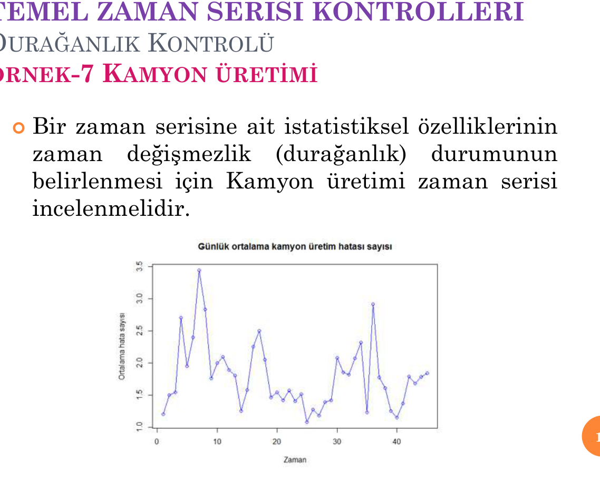
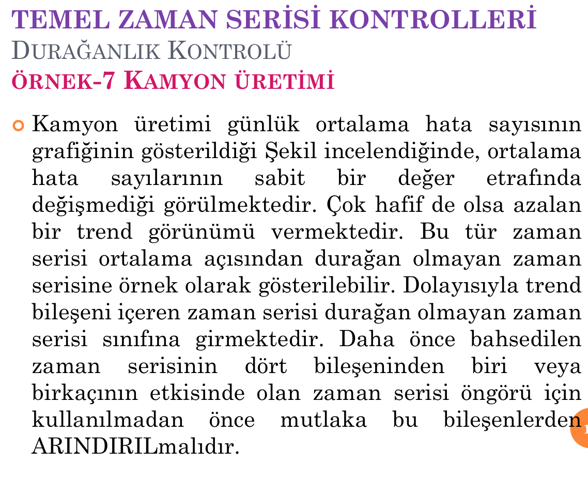
Örnek-8: ABD Tütün Üretimi Zaman Serisi Grafiği ve Tablosu Ders5 s.19-20
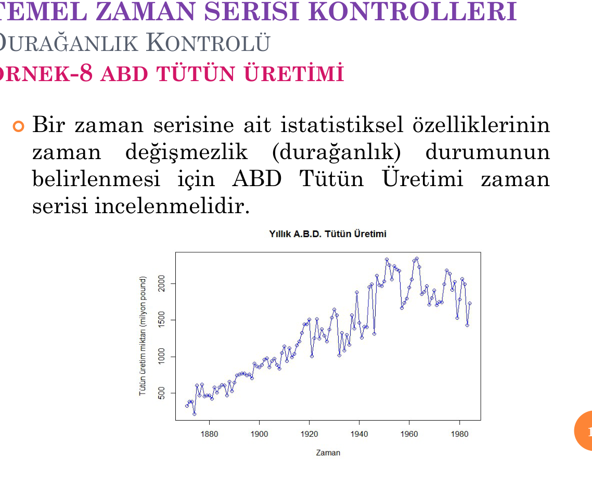
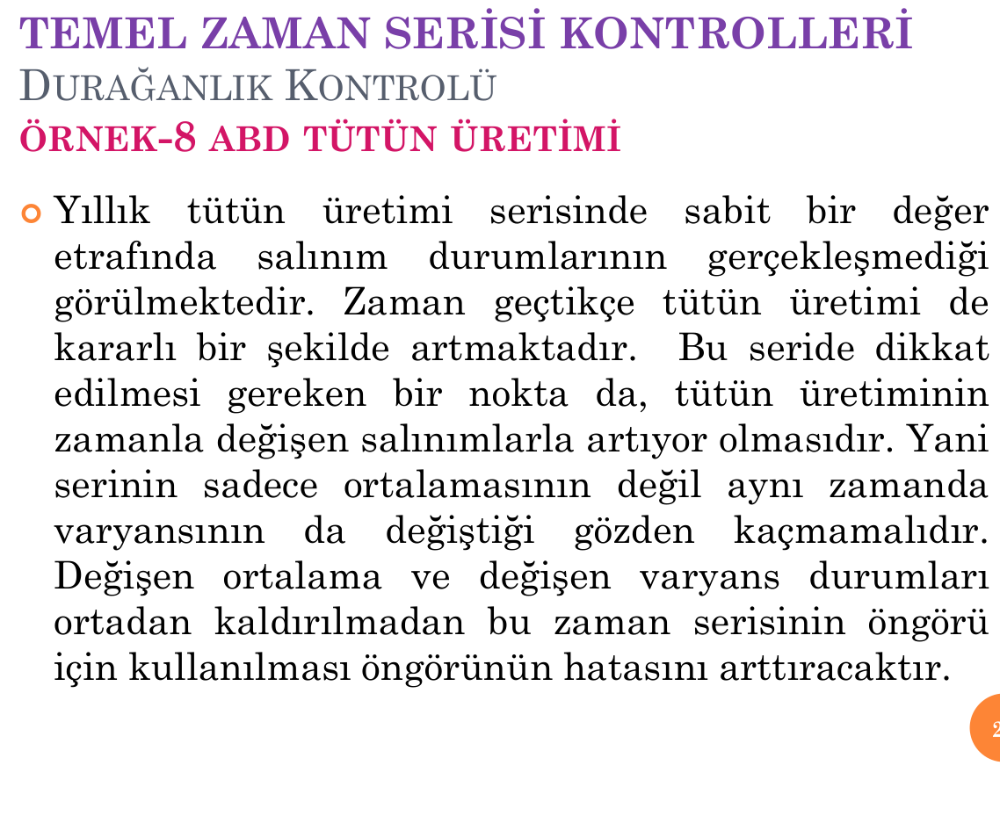
3. Süreç akış şeması (zaman serisi grafiği ile) s.21-41
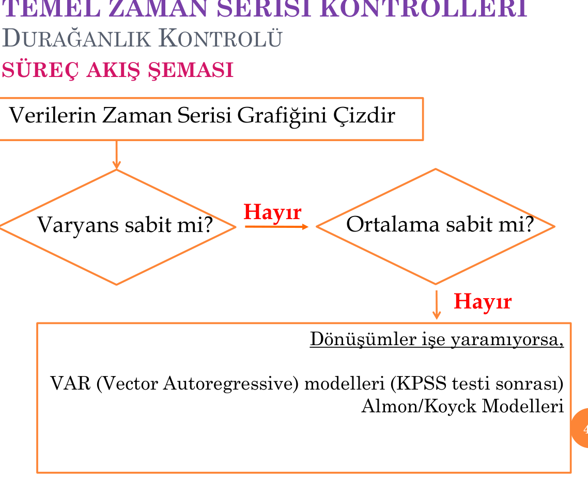
4. Varyans homojenliği, Box-Cox ve Örnek-9 (Otel Oda Sayısı) s.23-27
Değişen varyanslılık finansal serilerde sıkça görülür; değişen varyanslı seri OYNAK veri (oynaklığı yüksek veri) olarak adlandırılır. Oynak veriler doğrudan Box-Cox dönüşümüne tabi tutularak durağan hale getirilmelidir.
| λ | Dönüşüm |
|---|---|
| 0 | Logaritmik |
| −1 | 1/zt |
| 0.5 | √zt |
| 2 (DJI uygulamasında) | Karesi |
- Negatif değerli veri varsa tüm değerler pozitif bir değer ile toplanır; bu sistematik yapıyı değiştirmez.
- SSE'yi en küçük veren dönüşüm en ideal dönüşümdür.
- R:
library(MASS); b <- boxcox(lm(x ~ 1)); lambda <- b$x[which.max(b$y)]→ λ değerini verir. - Dönüşümden sonra varyansın homojen olup olmadığı mutlaka test edilmelidir; çünkü her zaman sağlanamayabilir.
Varyans homojenlik testi: Seri tam ortadan ikiye bölünür (σ1², σ2²).
- F testi (iki varyans oranı): H0: İki normal kitle eşit varyansa sahiptir.
- Levene testi: H0: İki kitle eşit varyansa sahiptir.
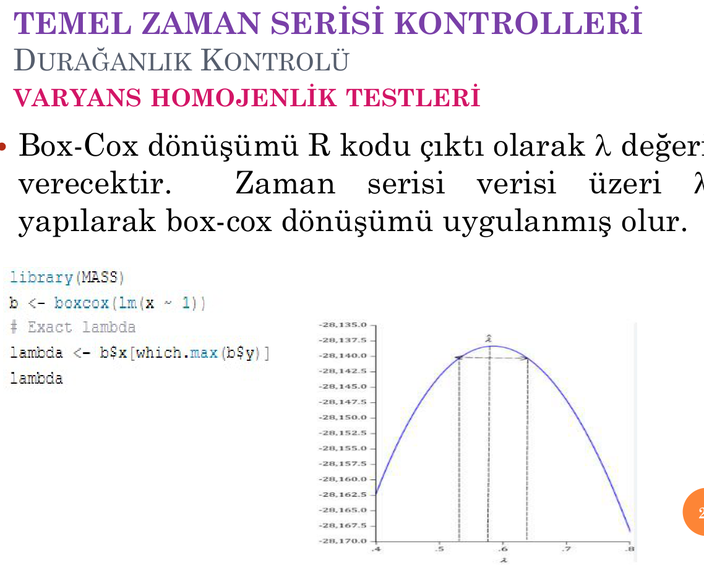
λ̂ değerini (burada ~0.58), sağ ve sol dikey kesikli çizgiler ise %95 güven aralığı sınırlarını gösterir.
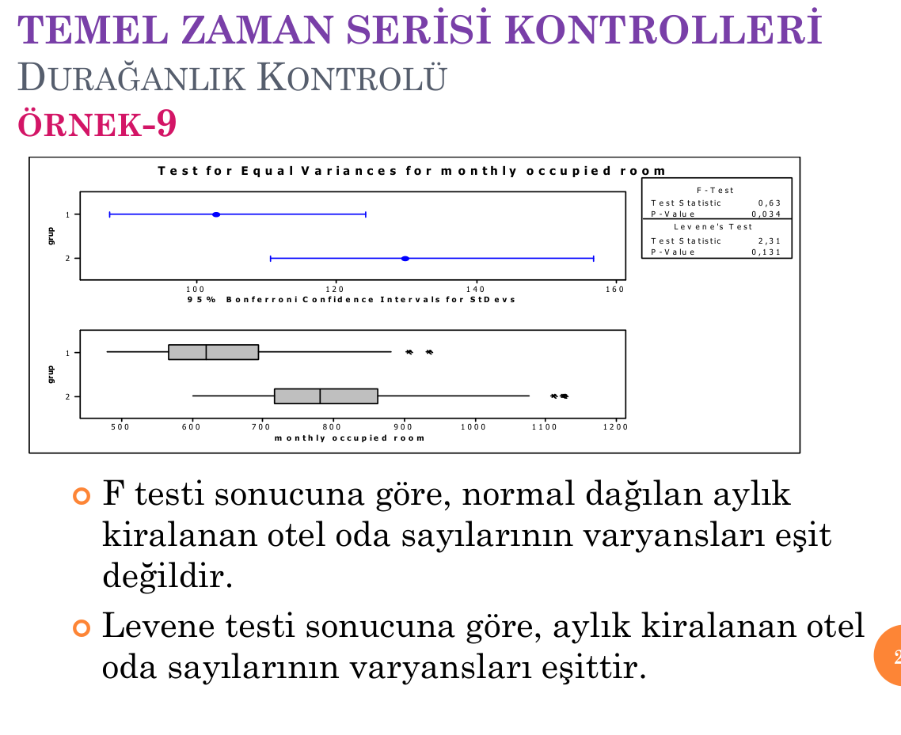
5. Fark alma ve Örnek-10 (Olympia Kağıt Havlu Grafikleri) s.30-38
d: mevsimsel olmayan fark alma (normal fark alma) operatörü. Seri fark alınarak durağanlaştırıldıysa modelde ifade edilmelidir.
- T gözlemin 1. farkında ilk gözlem kaybolur, seri 2. gözlemden başlar.
- Dönüşüm yapılmış seri “çalışılan seri” zb, zb+1, …, zT; b: dönüşümden sonra serinin başladığı sıra. Dönüşüm yoksa y1,…,yT.
- 1. fark → b = 2; 2. fark → b = 3; dönüşüm yok (zaten durağan) → b = 1, z1 = y1.
- 1. fark bileşenden arındıramazsa 2. fark gerekebilir.
- Fark derecesi arttıkça durağanlık kesin değildir; gözlem kaybedilir, seri daha karmaşık hale gelebilir. Literatürde ikiden fazla fark almanın sakıncalı olabileceği belirtilir. İdeal olan optimum fark sayısını belirlemektir.
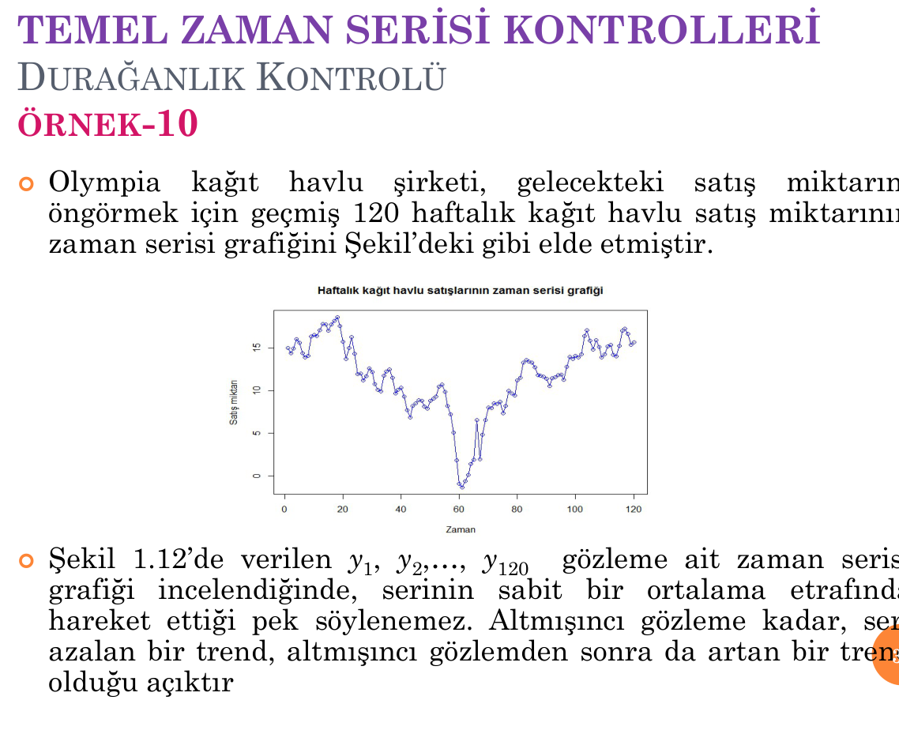
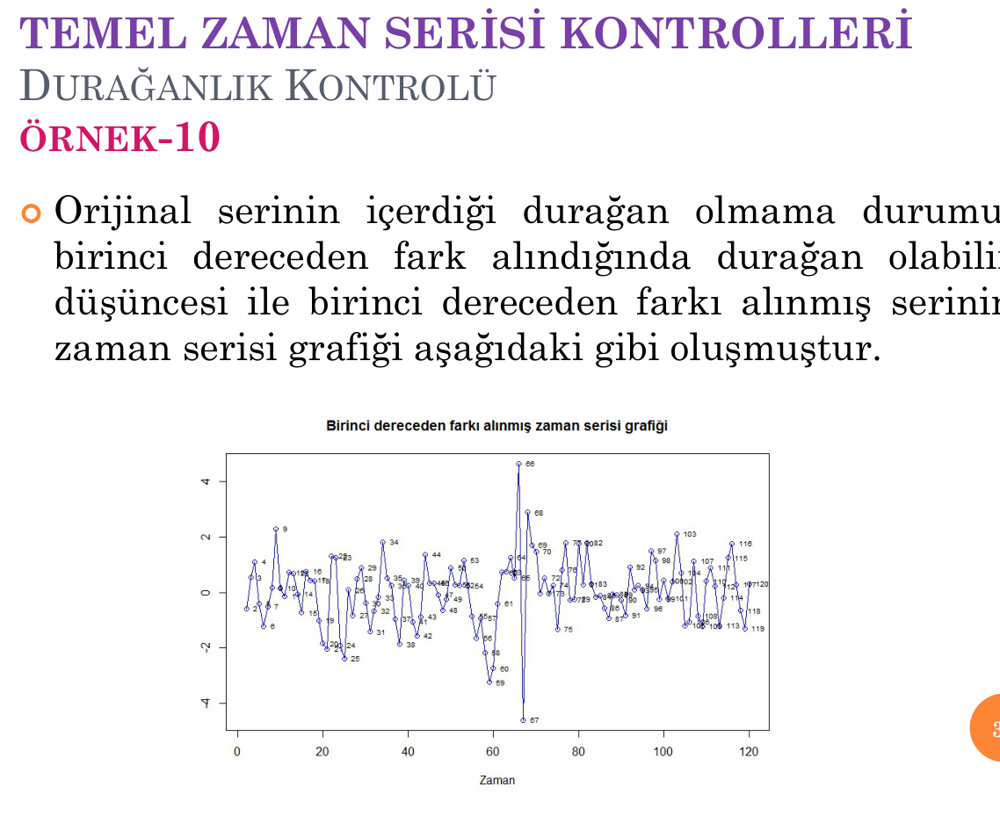
zt = yt − yt−1) alındığında orijinal serideki trend kalkmış ve seri 0 ortalaması etrafında sabit salınımlı hale gelmiştir. Ancak 66. (+4.5) ve 67. (−4.5) gözlemlerdeki sert sapmalar durağanlığı bozabilir; ikinci fark düşünülebilir fakat her fark gözlem kaybettirir ve kesin durağanlık garanti etmez.
6. Birim kök testleri s.42-45
Dickey-Fuller (DF) – Dickey & Fuller (1979), üç kalıp
ΔYt = β1 + δYt−1 + ut (sabit parametreli)
ΔYt = β1 + β2t + δYt−1 + ut (sabit + deterministik trend)
Yt'nin gecikmeli değerinin t istatistiği ADF test istatistiğidir; MacKinnon (1991) kritik değerleriyle karşılaştırılır.
Artırılmış Dickey-Fuller (ADF)
ΔYt = α + δYt−1 + Σj=2pδjΔYt−j+1 + et
ΔYt = α + βt + δYt−1 + Σj=2pδjΔYt−j+1 + et
Gecikme uzunluğu: Akaike veya Schwarz bilgi kriterleri. Schwert (1989) maksimum gecikme:
KPSS
ADF testi genelde düşük güçlüdür; Schwert (1989) Monte Carlo ile ADF'nin düşük güçlü ve gecikme uzunluğu seçimine çok duyarlı olduğunu göstermiştir. KPSS'de H0 durağanlıktır. Trend olmadığı varsayılır: Yt = μ̂ + êt, êt durağan varsayılır.
Uygulama 1 · DJI (Dow Jones Industrial Average)
Videoyu izlerken bu sayfayı açık tut. Tüm slayt grafikleri ve R çıktıları kendi adım başlığı altına eklenmiştir.
Adım 1 – Veri ve Fiyat Grafikleri s.2-5
DJIA bileşen şirketleri tablosu (3M, American Express, Amgen, Apple, Boeing, Caterpillar, Chevron, Cisco, Coca-Cola, Goldman Sachs…, endeks ağırlıklarıyla). Veri: 2020-01-02 – 2025 sonu günlük; sütunlar DJI.Open, High, Low, Close, Volume, Adjusted. Grafik: chartSeries(DJI, type="bars", theme="white"). Analizde Adjusted fiyat kullanılıyor. Fiyat grafiğinde 2020 başında sert düşüş ve sonra genel artış eğilimi var.
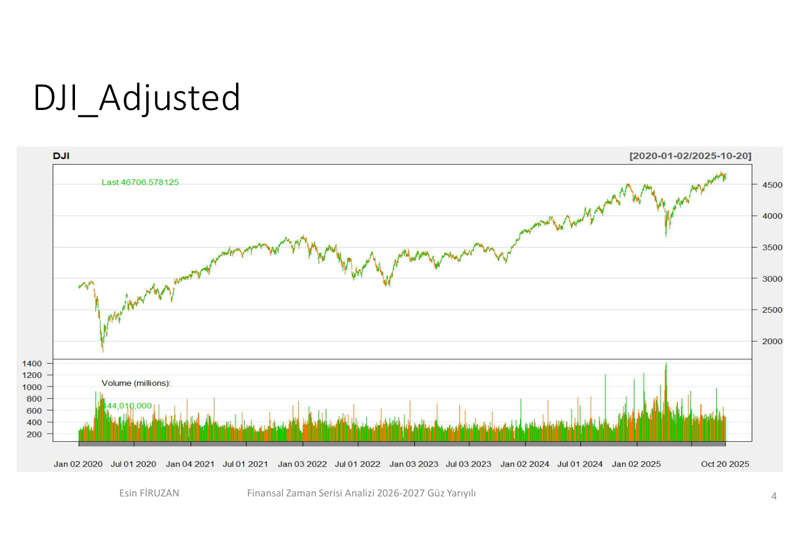
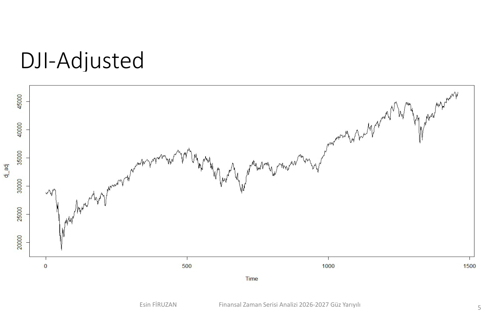
dj_adj) zamana göre sabit bir ortalama etrafında salınmamaktadır; belirgin yukarı yönlü trend içerdiği için durağan değildir. Bu nedenle analiz getiri serisi üzerinden sürdürülür.
Adım 2 – Getiri Hesabı ve Getiri Grafiği s.6-7
Basit net getiri Rt = Pt/Pt−1 − 1. Örn. 2020-01-03: 28634.88/28868.80 − 1 = −0.0081. Getiri grafiği sıfır etrafında dalgalanıyor; 2020 başında çok büyük dalgalanmalar (oynaklık kümelemesi) ve 2025'te bir sıçrama göze çarpıyor.
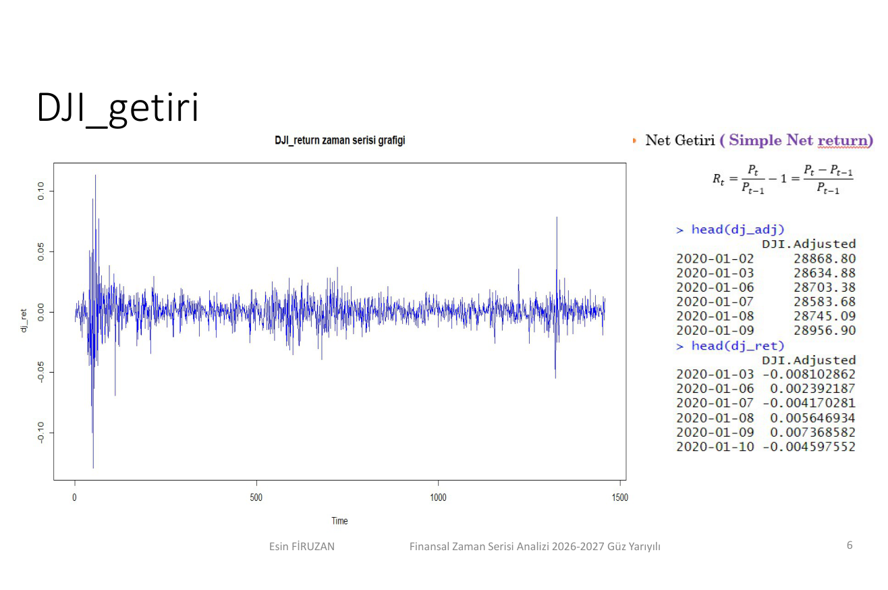
dj_ret) geçildiğinde trend ortadan kalkmış ve seri 0 ortalaması etrafında dalgalanmaya başlamıştır. Ancak 2020'nin başında (0–150. gözlemler arası) çok geniş salınımlar bir arada kümelenmiştir (volatility clustering).
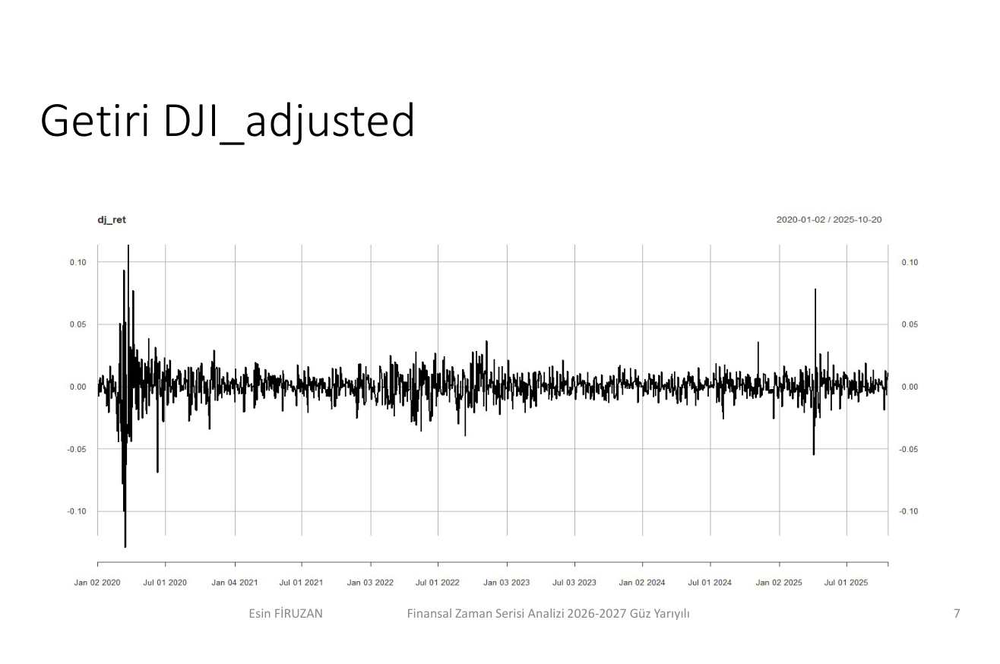
quantmod::Delt fonksiyonu ile k=1 (günlük), k=5 (5 günlük) ve k=20 (20 günlük / yaklaşık 1 aylık) çok dönemli basit net getiriler hesaplanmıştır; k kadar ilk gözlem NA olur.
Adım 3 – Yıllara göre tanımlayıcı istatistikler ve kutu grafiği s.8-9
| 2020 | 2021 | 2022 | 2023 | 2024 | 2025 | |
|---|---|---|---|---|---|---|
| nobs | 252 | 252 | 251 | 250 | 252 | 200 |
| Min | −0.129 | −0.025 | −0.039 | −0.021 | −0.026 | −0.055 |
| Max | 0.114 | 0.019 | 0.037 | 0.021 | 0.036 | 0.079 |
| Mean | 0.000502 | 0.000712 | −0.000288 | 0.000540 | 0.000506 | 0.000529 |
| Stdev | 0.0232 | 0.0078 | 0.0125 | 0.0072 | 0.0072 | 0.0112 |
| Skewness | −0.459 | −0.354 | −0.051 | −0.012 | 0.051 | 0.794 |
| Kurtosis | 8.351 | 0.654 | 0.375 | 0.140 | 2.701 | 13.891 |
Adım 4 – Normallik: Yoğunluk Grafikleri, Shapiro-Wilk ve Q-Q Plot s.10-12
Shapiro-Wilk, H0: Veriler normal dağılan bir kitleden gelmektedir.
| Yıl | p | Karar (α=0.05) |
|---|---|---|
| 2020 | 5.7e-15 | Normal değil |
| 2021 | 2.2e-03 | Normal değil |
| 2022 | 0.287 | Normal (H0 reddedilemez) |
| 2023 | 0.781 | Normal |
| 2024 | 4.6e-05 | Normal değil |
| 2025 | 2.6e-13 | Normal değil |
Adım 5 – Ortalamalar arası fark s.13
Önce shapiro.test(data): W = 0.82685, p < 2.2e-16 → H0 red, normal değil. “Normal dağılıma uysaydı” denilerek Welch t-testi: H0: ortalamalar arası fark sıfırdır. t = −0.21192, df = 1112.1, p = 0.8322 → H0 reddedilemez, fark istatistiksel olarak önemli değil, sıfırdır. (Ortalamalar 0.000342 ve 0.000484.)
sample1 ve sample2) bölünerek iki yarının ortalamalarının birbirine eşit olup olmadığı test edilmiştir. p = 0.8322 > 0.05 olduğu için H0 reddedilemez; getiri serisinin ortalaması zamanın iki yarısında değişmemiştir (ortalama durağanlığı vardır).
Adım 6 – Varyans homojenliği ve Box-Cox Dönüşümü Grafiği s.14-15
var.test(sample1, sample2) (F testi), H0: İki grubun varyansları eşittir. F = 3.4859, df 727/728, p < 2.2e-16 → H0 red, varyanslar eşit değil (varyans oranı 3.49).
Box-Cox: Veri negatif değerli olduğundan data_pos <- data + abs(min(data)) + 1 ile pozitife kaydırılır. λ = 2 → orijinal verinin karesi alınırsa varyans homojenliği sağlanabilir.
Adım 7 – Trend testleri (Cox-Stuart & Mann-Kendall) s.16-17
| Test | H0 | Çıktı | Karar |
|---|---|---|---|
| Cox-Stuart | Veride artan trend yoktur | D+ = 368, p = 0.3834 | H0 reddedilemez → artan trend yok |
| Mann-Kendall | Trend yoktur | tau = −0.00726, p = 0.67792 | H0 reddedilemez → trend yok |
cs.test(data) sonucunda p = 0.3834 > 0.05 olduğundan H0 reddedilemez; DJI getiri serisinde artan trend yoktur.MannKendall(data) sonucunda tau = -0.00726 ve 2-sided pvalue = 0.67792 > 0.05 olduğundan H0 reddedilemez; seride trend yoktur.Adım 8 – Birim kök (ADF Testi: Type 1, Type 2, Type 3) s.18-20
H0: Seri durağan değildir.
| Tip | Ne zaman yorumlanır | Sonuç |
|---|---|---|
| Type 1: no drift no trend | Seride ortalama ve trend yoksa | Tüm gecikmelerde (lag 0–7) ADF ≈ −45.4 … −14.2, p = 0.01 → H0 reddedilir → seri durağandır. |
| Type 2: with drift no trend | Ortalama var, trend yoksa | |
| Type 3: with drift and trend | Hem ortalama hem trend varsa |
aTSA::adf.test(data) çıktısında lag 0'dan 7'ye kadar tüm ADF istatistikleri (−45.4'ten −14.2'ye) çok negatiftir ve p.value = 0.01 < 0.05'tir.Uygulama 2 · TESLA
Not: Sunumdaki tüm çözümler 2020-2024 verisi içindir (s.2). Slaytlardaki tüm grafikler ve R çıktıları aşağıda kendi adım başlıkları altında açıklanmıştır.
Adım 1 – Fiyat ve Getiri Grafikleri s.3-9
plot(df_tesla$TSLA.Close, main='TESLA Hisse Fiyati', subset='2010::2024') chartSeries(df_tesla$TSLA.Close, type="bars", ..., subset='2020::2024') tsla_ret <- CalculateReturns(df_tesla$TSLA.Close, method="simple") # basit getiri tsla_lret <- CalculateReturns(df_tesla$TSLA.Close, method="log") # log getiri
Fiyat 2020-06 – 2024-11 arasında ~58 ile ~410 arasında dalgalanıyor (2021 sonunda zirve). Getiri grafikleri sıfır etrafında. s.9'da log getiri farklı frekanslarda (günlük, haftalık, aylık, yıllık) çizilmiş.
CalculateReturns(..., method="simple") ile elde edilen günlük basit getiri serisinde trend kalkmıştır ancak dönem dönem genişleyen oynaklık kümeleri ve ±%20'yi aşan uç sıçramalar mevcuttur.
to.weekly, to.monthly ve to.yearly ile farklı zaman dilimlerinde çizdirilmiştir; frekans düştükçe (günlükten yıllığa geçildikçe) kısa vadeli gürültü azalmakta ve ana dalgalanma yapısı daha net görülmektedir.
Adım 2 – Tanımlayıcı İstatistikler ve Histogramlar s.10-13
| Fiyat (Close) | Basit getiri | Log getiri | |
|---|---|---|---|
| n | 1116 | 1115 (1 NA) | 1115 (1 NA) |
| Ortalama | 223.41 | 0.002021 | 0.001256 |
| Medyan | 223.68 | 0.001659 | 0.001658 |
| Std. sapma | 63.96 | 0.0392 | 0.0391 |
| Min / Maks | 57.63 / 409.97 | −0.2106 / 0.2192 | −0.2365 / 0.1982 |
| Çarpıklık | 0.039 | 0.249 | −0.030 |
| Basıklık (excess) | 0.274 | 2.799 | 2.814 |
İlk satırda NA olmasının nedeni: getiri hesabında ilk gözlem kaybolur (Pt−1 yok). Getirilerin basıklığı yüksek → kalın kuyruk; log getiri neredeyse simetrik.
NA = 1 (ilk gözlem kaybı), çarpıklık 0.249 (sağa çarpık) ve basıklık 2.799 (sivri tepe / kalın kuyruk) olarak hesaplanmıştır.geom_histogram(bins=30, fill="lightblue") ile çizilen fiyat histogramı; merkezde 220–250$ bandında yoğunlaşma olmakla birlikte sol (60–100$) ve sağ (350–400$) kuyruklarda omuzlar mevcuttur.Adım 3 – Normallik, Çarpıklık (D'Agostino) ve Uyum İyiliği (gofTest) s.14-19
| Seri | Test | Çıktı | Karar |
|---|---|---|---|
| Fiyat | Jarque-Bera | X² = 3.9273, p = 0.1403 | H0 reddedilemez → normal |
| Fiyat | Shapiro-Wilk | W = 0.99141, p = 4.236e-06 | H0 red → normal değil |
| Basit getiri | Jarque-Bera | X² = 378.374, p < 2.2e-16 | Normal değil |
| Basit getiri | Shapiro-Wilk | W = 0.9708, p = 3.376e-14 | Normal değil |
| Basit getiri | Wilcoxon (medyan=0) | V = 325776, p = 0.1557 | H0 reddedilemez → konum (medyan) 0 |
Fiyatta JB ve SW farklı sonuç veriyor → testler farklı duyarlılıktadır (yorum sorusu olabilir).
D'Agostino çarpıklık testi (Ha: data have a skewness):
| Seri | skew | z | p | Karar |
|---|---|---|---|---|
| Fiyat | 1.1636 | 23.16 | <2.2e-16 | Çarpık |
| Basit getiri | 0.36491 | 8.70 | <2.2e-16 | Çarpık |
| Log getiri | −0.002791 | −0.069 | 0.9453 | Simetrik |
gofTest (Shapiro-Wilk GOF), tüm fiyat verisi (n = 3613): Normal için W = 0.7173, p = 0 → normal değil; Lognormal için W = 0.9063, p = 0 → lognormal de değil. (Ders 3: “Tüm borsa verileri lognormal dağılıma her zaman uymaz.”)
tsla_lret) için skew = −0.00279, p = 0.9453 > 0.05 çıkması logaritmik dönüşümün asimetriyi giderdiğini ve seriyi simetrik yaptığını kanıtlar!gofTest(..., distribution="lnorm") sonucunda p-value = 0 < 0.05 çıkmıştır; yani TESLA fiyatları lognormal dağılıma da uymamaktadır.Adım 4 – Ortalama eşitliği (Welch İki Örneklem t-Testi) s.15
Seri ortadan iki gruba bölünüp Welch t-testi: t = 5.2897, df = 840.22, p = 1.564e-07 → H0 red → iki yarının ortalamaları farklı (233.42 vs 213.40) → fiyatın ortalaması sabit değil.
Adım 5 – Varyans eşitliği (Levene Testleri) s.20-22
H0: Varyanslar eşittir. Seri orta_deger <- nrow(veri) %/% 2 ile ikiye bölünüp leveneTest (center = median):
| Seri | F | p | Karar |
|---|---|---|---|
| Fiyat | 5378.7 | <2.2e-16 | Varyanslar eşit değil |
| Basit getiri | 28.113 | 1.218e-07 | Eşit değil |
| Log getiri | 27.711 | 1.497e-07 | Eşit değil |
→ Getirilerde de değişen varyans var (Ders 5 akışına göre: dönüşümler işe yaramazsa ARCH/GARCH).
F value = 5378.7 ve p < 2.2e-16 *** ile varyans homojenliği kesin olarak reddedilir.F = 28.113, p = 1.218e-07) hem de log-getiride (F = 27.711, p = 1.497e-07) H0 reddedilir; getiri ve logaritma dönüşümü varyansı sabitlemeye yetmemiştir (ARCH/GARCH gerekir).Adım 6 – Model ve Öngörü Grafikleri: ARIMA(0,1,1) vs. ETS(M,A,N) s.23-24
Son 180 gözlem test için dışarıda bırakılıyor: toplam 3381 → training 3201, testing 180 (ts_split(…, sample.out = 180)) → bu, Ders 3'teki dönem dışı kestirim fikridir.
| auto.arima → ARIMA(0,1,1) | ets → ETS(M,A,N) | |
|---|---|---|
| Parametreler | ma1 = −0.0381 (s.e. 0.0174), σ² = 19.98 | α = 0.9844, β = 0.0027, σ = 0.0362 |
| AIC / BIC | 18667.82 / 18679.96 | 23125.81 / 23156.16 |
| RMSE | 4.4688 | 4.4734 |
| MAE | 1.7356 | 1.7343 |
| MAPE | 2.4858 | 2.4866 |
| MASE | 0.9983 | 0.9976 |
ARIMA(0,1,1)'deki “1” fark derecesidir (d=1, Ders 5: fark alındıysa modelde ifade edilmeli). Öngörüler 180 adım için çizilmiş (plot(forecast(fit_ets, h=180))); öngörü aralıkları ileriye gittikçe genişliyor.
auto.arima fiyat serisinin durağan olmadığını tespit edip 1. farkını alarak (d=1) ARIMA(0,1,1) modelini kurmuştur. Sağdaki grafikte 3201. gözlemden sonraki 180 günlük öngörü ufku (mavi yatay çizgi ve gittikçe açılan %80/%95 güven/öngörü hunisi) görülmektedir. AIC (18667.82) ve RMSE (4.4688) değerleri ETS modelinden daha düşüktür.
ETS(M,A,N) (Çarpımsal hata, Toplamsal trend, Mevsimsellik yok) olarak tahmin edilmiştir. Sağdaki öngörü grafiğinde hata terimi çarpımsal (M) olduğu için 180 günlük öngörü aralığı (mavi-gri gölgeli huni) ARIMA'ya kıyasla çok daha geniş açılmaktadır.
✍️ Konu Testleri
Her soruyu cevapla → Kontrol et. Açıklama ve kaynak sayfa hemen görünür.
📝 Deneme Sınavları
🃏 Bilgi Kartları
📄 Formül Kâğıdı (son tekrar)
| Konu | Formül / Bilgi |
|---|---|
| Basit net getiri | Rt = Pt/Pt−1 − 1 = (Pt − Pt−1)/Pt−1 |
| Basit brüt getiri | 1 + Rt = Pt/Pt−1 |
| k dönem bileşik | 1 + Rt(k) = Pt/Pt−k = ∏j=0k−1(1+Rt−j) |
| 2 dönem | 1+Rt(2) = 1 + Rt−1 + Rt + Rt−1Rt ≈ 1 + Rt−1 + Rt |
| Yıllıklandırılmış | [∏(1+Rt−j)]1/k − 1 ≈ (1/k)ΣRt−j (Taylor) |
| Sürekli bileşik faiz | A = C·er·n; C = A·e−r·n; (1+r/m)m; %10 → 1.10517 |
| Log getiri | rt = ln(1+Rt) = ln Pt − ln Pt−1; Rt = ert − 1 |
| Çok dönem log | rt[k] = rt + rt−1 + … + rt−k+1 |
| Yüzdelik | r = 100 ln(1+R/100); R = 100(er/100 − 1) |
| Portföy | Rp,t = Σ wiRit |
| Temettü | Rt = (Pt+Dt)/Pt−1 − 1; rt = ln(Pt+Dt) − ln Pt−1 |
| Aşırı getiri | Zt = Rt − R0t; zt = rt − r0t |
| Varyans | σ̂² = Σ(xt−μ̂)²/(T−1) |
| Çarpıklık / Basıklık | Ŝ = Σ(x−μ̂)³/((T−1)σ̂³); K̂ = Σ(x−μ̂)⁴/((T−1)σ̂⁴) |
| Lognormal | E(R) = eμ+σ²/2 − 1; Var(R) = e2μ+σ²(eσ² − 1) |
| Ölçek karışımı | rt ~ (1−X)N(μ,σ1²) + XN(μ,σ2²), X ~ Bernoulli |
| Çarpıklık testi | S* = Ŝ/√(6/T) ~ N(0,1); H0: simetrik |
| Basıklık testi | K* = (K̂−3)/√(24/T) ~ N(0,1); H0: normal kuyruk |
| Jarque-Bera | JB = (K*)² + (S*)² ~ χ²2; H0: normal |
| ZS modeli | Yt = f(t) + εt |
| Zayıf durağanlık | E(Yt)=μ, V(Yt)=σ², Cov(Yt,Ys)=γs−t |
| Box-Cox | z(λ) = (zλ − 1)/λ; λ=0 log, λ=−1 1/z, λ=0.5 √z, λ=2 kare |
| Fark | d=1: yt − yt−1 (b=2); d=2: yt − 2yt−1 + yt−2 (b=3); fark yok b=1 |
| DF | ΔYt = δYt−1 + u; + β1; + β1 + β2t; H0: δ=0 (birim kök) |
| Schwert | pmax = [12(n/100)1/4] |
| KPSS | H0: σu² = 0 (durağan); H1: σu² > 0 |
| Öngörü horizonu | Yakın <10, Kısa 10–30, Orta 30–90, Uzun >90 zd |
| Değerlendirme | Arasınav %30, Ödev-Sunum %30, Final %40 |